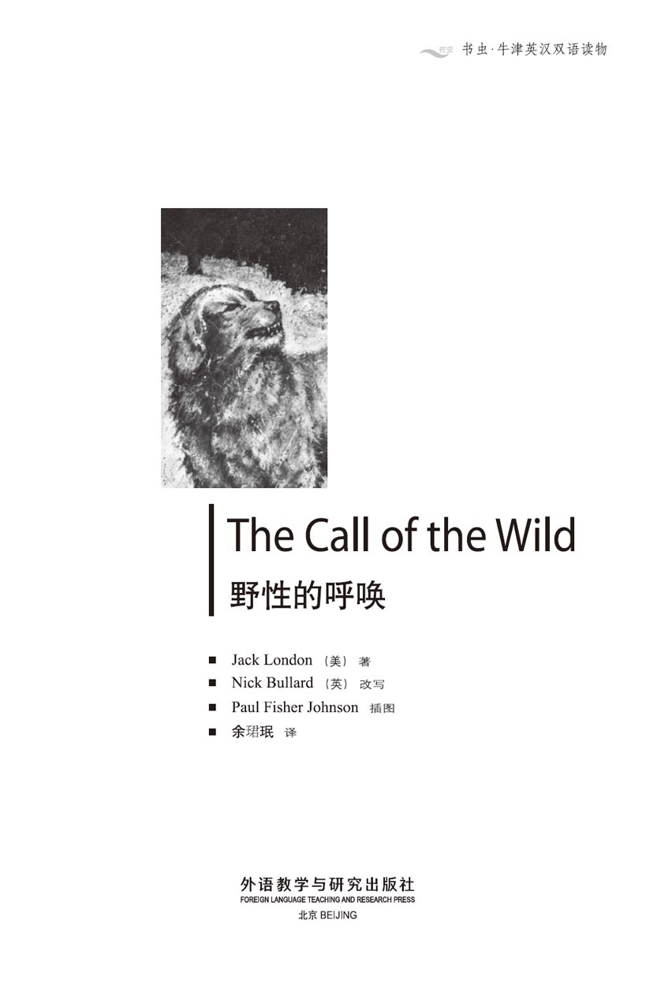
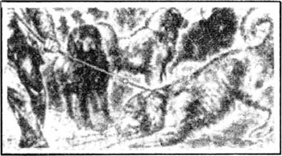
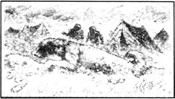
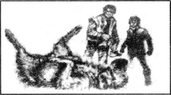
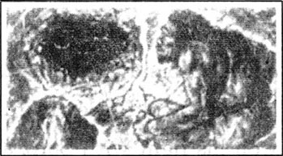
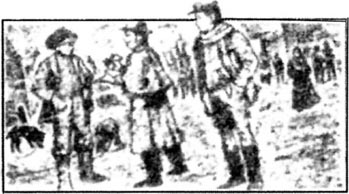
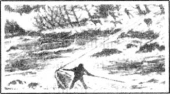
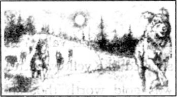
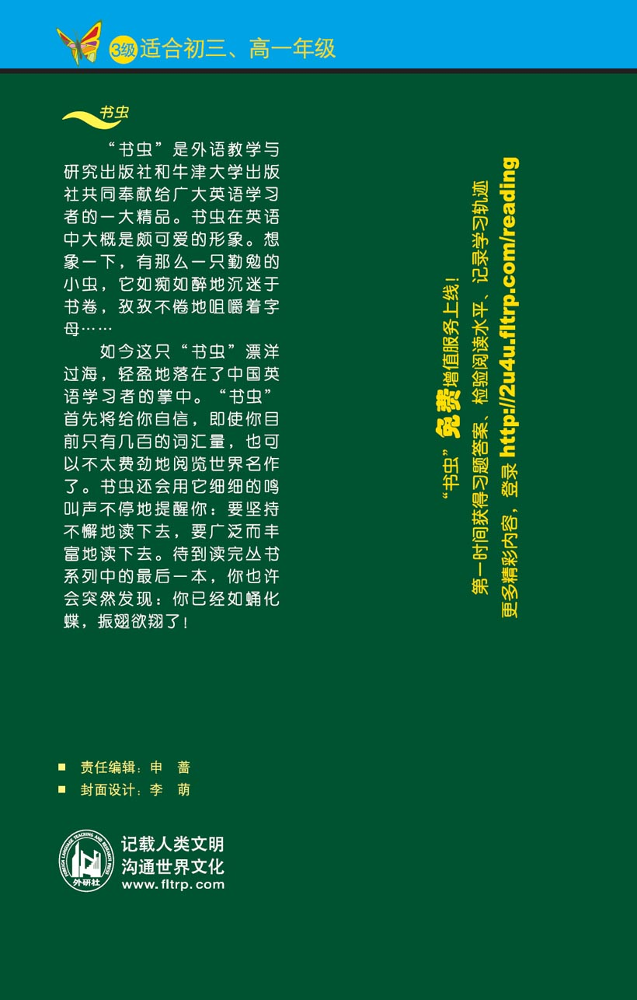

扉页

版权页
京权图字01-96-1579
Originally published by Oxford University Press, Great Clarendon Street, Oxford. © 1995
This edition is licensed for sale in the People's Republic of China only and not for export therefrom.
'Oxford' is a registered trademark of Oxford University Press.
只限中华人民共和国境内销售，不包括香港特别行政区、澳门特别行政区及台湾省。不得出口。
图书在版编目（CIP）数据
野性的呼唤 = The Call of the Wild／（美）伦敦（London，J.）著；（英）布拉德（Bullard，N.）改写；余玿珉译．—北京：外语教学与研究出版社，1996.12（2014.9 重印）
（书虫·牛津英汉双语读物）
ISBN 978-7-5600-1171-4
Ⅰ．野… Ⅱ．①伦…②布…③余… Ⅲ．小说—对照读物—英、汉 Ⅳ．H319.4：I
中国版本图书馆CIP数据核字（97）第00443号
出版人： 蔡剑峰
责任编辑：申 蔷
出版发行：外语教学与研究出版社
社 址：北京市西三环北路19号（100089）
网 址：http://www.fltrp.com
版 次：1997年3月第1版
书 号：ISBN 978-7-5600-1171-4
* * *
凡侵权、盗版书籍线索，请联系我社法律事务部
举报电话：（010）88817519
电子邮箱：banquan@fltrp.com
法律顾问：立方律师事务所 刘旭东律师
中咨律师事务所 殷 斌律师
简介
简 介
在加利福尼亚的家里，巴克过着安逸舒适的生活。他是那儿最高大强壮的狗，地位举足轻重。他和孩子们一同散步，在水中嬉戏，冬天的时候他就坐在主人的炉火边取暖。
但是在1897年，人们在育空河发现了金矿，他们需要像巴克这样的狗。于是巴克被从家乡偷运到北方。他在那里学会了拉雪橇，在冰天雪地中日复一日地跋涉。他学会了偷食以慰饥肠，破冰取水解渴，还学会了反击来对付那些欺负他的狗。而且他学得很快。
不久巴克成为了北方所有著名的拉雪橇的狗之一。但是北部是狼群出没的森林，在那里他们对着明月长嗥。野性的呼唤在巴克的梦中回响，越来越响亮……
杰克·伦敦1876年生于旧金山，死于1916年。他出身穷苦，在短暂的一生中有着丰富的经历——海员、工人、育空河的淘金人、旅行家、记者和作家。他写了很多书，其中以《野性的呼唤》和另一本写狗的书《白芳》，最广为流传。
目录
1．To the north
1
To the north
Buck did not read the newspapers. He did not know that trouble was coming for every big dog in California. Men had found gold in the Yukon, and these men wanted big, strong dogs to work in the cold and snow of the north.
Buck lived in Mr Miller's big house in the sunny Santa Clara valley. There were large gardens and fields of fruit trees around the house, and a river nearby. In a big place like this, of course, there were many dogs. There were house dogs and farm dogs, but they were not important. Buck was chief dog; he was born here, and this was his place. He was four years old and weighed sixty kilos. He went swimming with Mr Miller's sons, and walking with his daughters. He carried the grandchildren on his back, and he sat at Mr Miller's feet in front of the fire in winter.
But this was 1897, and Buck did not know that men and dogs were hurrying to north-west Canada to look for gold. And he did not know that Manuel, one of Mr Miller's gardeners, needed money for his large family. One day, when Mr Miller was out, Manuel and Buck left the garden together. It was just an evening walk, Buck thought. No one saw them go, and only one man saw them arrive at the railway station. This man talked to Manuel, and gave him some money. Then he tied a piece of rope around Buck's neck.
Buck growled, and was surprised when the rope was pulled hard around his neck. He jumped at the man. The man caught him and suddenly Buck was on his back with his tongue out of his mouth. For a few moments he was unable to move, and it was easy for the two men to put him into the train.
When Buck woke up, the train was still moving. The man was sitting and watching him, but Buck was too quick for him and he bit the man's hand hard. Then the rope was pulled again and Buck had to let go.
That evening, the man took Buck to the back room of a bar in San Francisco. The barman looked at the man's hand and trousers covered in blood.
'How much are they paying you for this?' he asked.
'I only get fifty dollars.'
'And the man who stole him—how much did he get?' asked the barman.
'A hundred. He wouldn't take less.'
'That makes a hundred and fifty. It's a good price for a dog like him. Here, help me to get him into this.'
They took off Buck's rope and pushed him into a wooden box. He spent the night in the box in the back room of the bar. His neck still ached with pain from the rope, and he could not understand what it all meant. What did they want with him, these strange men? And where was Mr Miller?
The next day Buck was carried in the box to the railway station and put on a train to the north. For two days and nights the train travelled north, and for two days and nights Buck neither ate nor drank. Men on the train laughed at him and pushed sticks at him through the holes in the box. For two days and nights Buck got angrier and hungrier and thirstier. His eyes grew red and he bit anything that moved.
In Seattle four men took Buck to a small, high-walled back garden, where a fat man in an old red coat was waiting. Buck was now very angry indeed and he jumped and bit at the sides of his box. The fat man smiled and went to get an axe and a club.
'Are you going to take him out now?' asked one of the men.
'Of course,' answered the fat man, and he began to break the box with his axe.
Immediately the four other men climbed up onto the wall to watch from a safe place.
As the fat man hit the box with his axe, Buck jumped at the sides, growling and biting, pulling with his teeth at the pieces of broken wood. After a few minutes there was a hole big enough for Buck to get out.
'Now, come here, red eyes,' said the fat man, dropping his axe and taking the club in his right hand.
Buck jumped at the man, sixty kilos of anger, his mouth wide open ready to bite the man's neck. Just before his teeth touched the skin, the man hit him with the club. Buck fell to the ground. It was the first time anyone had hit him with a club and he did not understand. He stood up, and jumped again. Again the club hit him and he crashed to the ground. Ten times he jumped at the man, and ten times the club hit him. Slowly he got to his feet, now only just able to stand. There was blood on his nose and mouth and ears. Then the fat man walked up and hit him again, very hard, on the nose. The pain was terrible. Again, Buck jumped at the man and again he was hit to the ground. A last time he jumped, and this time, when the man knocked him down, Buck did not move.
'He knows how to teach a dog a lesson,' said one of the men on the wall. Then the four men jumped down and went back to the station.
'His name is Buck,' said the fat man to himself, reading the letter that had come with the box. 'Well, Buck, my boy,' he said in a friendly voice, 'we've argued a little, and I think the best thing to do now is to stop. Be a good dog and we'll be friends. But if you're a bad dog, I'll have to use my club again. Understand?'
As he spoke, he touched Buck's head, and although Buck was angry inside, he did not move. When the man brought him water and meat, Buck drank and then ate the meat, piece by piece, from the man's hand.
Buck was beaten (he knew that) but he was not broken. He had learnt that a man with a club was stronger than him. Every day he saw more dogs arrive, and each dog was beaten by the fat man. Buck understood that a man with a club must be obeyed, although he did not have to be a friend.
Men came to see the fat man and to look at the dogs. Sometimes they paid money and left with one or more of the dogs. One day a short, dark man came and looked at Buck.
'That's a good dog!' he cried. 'How much do you want for him?'
'Three hundred dollars. It's a good price, Perrault,' said the fat man.
Perrault smiled and agreed that it was a good price. He knew dogs, and he knew that Buck was an excellent dog. 'One in ten thousand,' Perrault said to himself.
Buck saw money put into the fat man's hand, and he was not surprised when he and another dog called Curly were taken away by Perrault. He took them to a ship, and later that day Buck and Curly stood and watched the coast get further and further away. They had seen the warm south for the last time.
Perrault took Buck and Curly down to the bottom of the ship. There they met another man, Francois. Perrault was a French-Canadian, but Francois was half-Indian, tall and dark. Buck learnt quickly that Perrault and Francois were fair men, calm and honest. And they knew everything about dogs.
There were two other dogs on the ship. One was a big dog called Spitz, as white as snow. He was friendly to Buck at first, always smiling. He was smiling when he tried to steal Buck's food at the first meal. Francois was quick and hit Spitz before Buck had time to move. Buck decided that this was fair, and began to like Francois a little.
Dave, the other dog, was not friendly. He wanted to be alone all the time. He ate and slept and was interested in nothing.
One day was very like another, but Buck noticed that the weather was getting colder. One morning, the ship's engines stopped, and there was a feeling of excitement in the ship. Francois leashed the dogs and took them outside. At the first step Buck's feet went into something soft and white. He jumped back in surprise. The soft, white thing was also falling through the air, and it fell onto him. He tried to smell it, and then caught some on his tongue. It bit like fire, and then disappeared. He tried again and the same thing happened. People were watching him and laughing, and Buck felt ashamed, although he did not know why. It was his first snow.
Yukon a river in North America. 育空河。
chief adj. most important; main. 主要的；首要的。
weigh v. show a certain measure when put on scales. 测出重量。
fire n. burning fuel in a furnate for cooking food or heating room. 炉火；取暖装置。
railway station a place where trains stop on a railway line. 火车站。
growl v. (of animal or thunder) make a low threatening sound. 指（动物或雷）作低沉的怒吼声。
jump at sb. 扑向某人。
be unable to do not have the ability, opportunty or authority to do sth.. 无法做某事。
wake up stop sleeping. 醒来。
ache v. suffer from a continuous dull pain 持续地隐隐作痛。
neither... nor... not... and not. 既不……也不……。
laugh at ridicule sb./sth. 取笑；讥笑某人／某事。
bite at sth. try to bite sth., snap at sth.. 去咬某物；突然猛咬某物。
axe n. tool with a handle and a heavy metal blade used for chopping wood. 斧子。
club n. heavy stick with one end thicker than the other, usde as weapon. （一端粗一端细的沉重的）棍棒（可用作武器）。
hit v. strike sb./sth. with a blow. 打、击中某人或某物。
stand up rise to one's feet 起立；站起来。
crash v. fall or strike suddenly and noisily. 突然倒下；撞击（某物）。
walk up approach sb./sth.. 走近某人／某物。
knock down strike sb. to the ground or the floor. 将某人击倒或撞倒在地上。
argue v. express an opposite opinion, exchange angry words, quarrel. 争辩；争吵。
obey v. do what one is told to do 服从；顺从。
agree v. say that one is willing. 同意；愿意。
surprise v. cause (sb.) to shock 使（某人）吃惊。
fair adj. in a fair manner. 公平的；正直的。
friendly adj. showing or expressing, kindness and helpfulness. 亲切的；友好的。
get colder become colder. 变得越来越冷。
leash v. put a leash on 用皮带系住。
surprise n. feeling caused by sth. happening suddenly or unexpectedly. 惊奇；惊讶。
disappear v. no longer be visible. 消失；失踪。
北部之旅
1 北部之旅
巴克不曾读过报纸，他不知道灾难将降临在加州的每一条大狗身上。人们在育空河里发现了金子，他们需要能在北方严寒的冰雪环境中工作的高大强壮的狗。
在阳光明媚的圣克拉拉山谷中，巴克的家就在米勒先生的大房子里。房子的周围是开阔的庄园和种满了果树的田野。一条小河从附近流过。这样一个辽阔的地方，有许许多多狗。诸如看门狗和牧羊犬，但他们是无足轻重的。真正的狗的首领是巴克；他生于斯长于斯。他4岁，体重60公斤。他同米勒先生的儿子一起游泳，也陪着他的女儿们一起去散步，有时还会给米勒先生的孙儿们当马骑。冬天到了，他就偎着炉火蹲坐在米勒先生的脚边。
然而到了1897年，巴克不知道这一年人们都带着狗蜂涌到加拿大西北部寻找金矿。他更不知道，米勒先生的一个园丁曼纽尔需要钱养活他的一大家子。有一天，米勒先生出去了，曼纽尔带着巴克离开了庄园。对于巴克来说，他还以为这只是一次傍晚的散步。没有人看到他们离开，只有一个人看见他们到了火车站。这个人同曼纽尔说了些什么，然后塞给他一些钱，随后就将一条绳子系到巴克的脖子上。

巴克咆哮起来，却吃惊地发现脖子上的绳索勒得紧紧的。他跳起来直扑向那个人。那人一把抓住了巴克，突然间巴克已仰面朝天摔在地上，舌头都耷拉出来了。过了好一会儿他都动弹不得，于是两个人轻而易举地把他送上了火车。
当巴克醒过来的时候，火车仍然在行进着。那人坐在那儿注视着他，然而巴克却更加迅疾，狠狠地咬住了那人的手。但脖子上的绳索又一次勒住了他，巴克不得不松了口。
那天晚上，那个人把巴克带到旧金山一间酒吧的后屋里。酒吧老板看了看那人血迹斑斑的手和长裤。
“他们付你多少钱？”他问。
“我只挣50美元。”
“那么那个偷狗的人——他赚多少？”酒吧老板问道。
“100美元。少一个子儿他都不干。”
“也就是说150美元。对于这样一条狗可真是个好价钱。这边来，帮我把他弄到这里去。”
他们解开巴克的绳索，把他推进一只木箱里。他在酒吧后屋的那个木箱中过了一夜。他的脖子仍然因为绳子勒过而疼痛不已，而且所有的一切都令他如坠雾里云中。这些陌生人，他们想让他做什么呢？米勒先生又在哪里呢？
第二天巴克被关在木箱里运到火车站，送上了北去的列车。火车向北开了两天两夜。这两天两夜，巴克滴水未进。火车上的人们嘲笑他，把木棍从箱子上的洞口伸进去捅他。这两天两夜，巴克越来越怒火中烧，也越来越饥渴难忍。他红着眼睛，撕咬所有移动的东西。
在西雅图，四个人把巴克抬进一座小小的但却有高高院墙的庄园里。一个身着旧红外套的肥胖男人正等在那里。这当口儿巴克已经愤怒到了极点。他跳着，咬着木箱的边缘。那胖子微微一笑，拿来一把斧子和一根木棍。
“你打算现在就把他放出来吗？”其中一人问道。
“当然。”胖子说。他开始用斧子劈开木箱。
立刻，另外4个人都爬上院墙，从安全的地方观望着。
当那个胖子用斧头劈木箱时，巴克在里面四处跳着、咆哮着、撕咬着，用牙齿扯着碎木片。一会儿，就有了一个大洞，巴克可以钻出来了。
“现在，过来，你这急红了眼的。”那胖子说着扔下斧头，右手抄起木棍。
巴克60公斤的愤怒之躯扑向那人，他大张着嘴准备一口咬住那人的脖子。就在他的牙齿快要碰到皮肤的时候，那人用棍子给了他一下，巴克摔倒在地。这还是头一次有人用棍子打他，他不知所措。他站起来，再次猛扑过去，木棍再次击中了他使他瘫倒在地。他扑了10次，木棍打了他10次。他慢慢地站起来，现在他仅能勉强站住。鲜血从他的口鼻和耳朵中涌出来。然后那人走上前又打他，狠狠地击中了他的鼻子。剧痛袭来，巴克再一次扑向那人，但他又被打倒在地。最后一次他扑上去，而这一次，当那人把他打倒时，巴克再也没有动弹一下。
“他可知道如何把狗制得服服帖帖的。”墙上的一个人说。然后这4个人跳下来，回车站去了。
“他的名字叫巴克。”那胖子自言自语道，读着写在木箱上的字母。“咳，巴克，我的孩子，”他用友好的语气说道，“我们有场小小的争斗，现在我想我们最好停战。做一只好狗，我们会成为朋友的。但是你要是使坏，我就不得不再用棍子对付你，明白吗？”
他一边说，一边抚摸着巴克的头。虽然巴克愤恨难平，他却没有再反抗。当那人给他拿来水和肉时，巴克喝了水，又从那人的手上一片又一片地吃肉。
巴克挨了打（他现在知道怎么回事了），但他并未就此垮掉。他知道拿棍子的人比他强大。每一天他都看见许多狗被送进来。每条狗都被那胖子痛打。巴克明白了他必须听从拿棍子的人，虽然那人不一定是朋友。
人们来找胖子看狗。有时他们付钱后牵走一只或更多的狗。一天，一个又矮又黑的人来了，他看见了巴克。
“那可是条好狗！”他叫道，“你卖多少钱？”
“300美元。这是个好价钱，佩罗。”那胖子说。
佩罗笑了，他知道这价钱合适。他是选狗的行家里手，清楚巴克是一条优秀的狗。“万里挑一。”佩罗心里说。
巴克看见那胖子收了钱，并且当他和另一条叫科莉的狗被佩罗带走时，他对此已经不以为奇了。他把他们带上船，那天巴克和科莉站在船上看着越来越远的海岸，这是他们最后一次看见温暖的南方了。
佩罗把巴克和科莉带到船尾，在那里他们见到另一个人，弗朗索瓦斯。佩罗是法国与加拿大的混血儿，弗朗索瓦斯则有一半印第安人的血统，长得又黑又高。巴克很快就了解到佩罗和费朗索瓦斯为人不错，沉稳可靠。他们对于狗的习性可谓了如指掌。
船上还有两只别的狗。其中一只大狗叫斯皮兹，浑身雪白。他起初对巴克倒挺友好，时时冲他微笑致意。但吃第一顿饭时，他就企图偷吃巴克的食物，而脸上居然还微笑着。在巴克还来不及采取任何行动之前，弗朗索瓦斯就迅速给了斯皮兹一下。巴克觉得这事处理得挺公道，他对弗朗索瓦斯有了一点儿好感。
另一只狗戴夫并不友善。他喜欢独自待着。他除了吃就是睡，对一切都漠不关心。
日子在平静中一天天地过去，但巴克留意到天气在渐渐地变冷。一个早晨，船的马达终于停止了，船上有一种令人兴奋的气氛。弗朗索瓦斯用绳子拴住狗，把他们带出船舱。巴克一迈脚就陷进一种轻软洁白的东西里，他惊恐地跳了回去。那轻软洁白的东西也正从空中飘下来，落在他的身上。他尝试着嗅嗅它，然后又用舌头舔舔它，那东西嚼起来像火一样灼烧，但转瞬就无影无踪了。他又试了试，还是同样的结果。人们看着他笑了起来。虽然巴克不知道为什么，但他害了羞。这毕竟是他第一次接触到雪。
2．The law of club and tooth
2
The law of club and tooth
Buck's first day at Dyea Beach was terrible. Every hour there was some new, frightening surprise. There was no peace, no rest—only continual noise and movement. And every minute there was danger, because these dogs and men were not town dogs and men. They knew only the law of club and tooth.
Buck had never seen dogs fight like these dogs; they were like wolves. In a few minutes he learnt this from watching Curly. She tried to make friends with a dog, a big one, although not as big as she was. There was no warning. The dog jumped on Curly, his teeth closed together, then he jumped away, and Curly's face was torn open from eye to mouth.
Wolves fight like this, biting and jumping away, but the fight did not finish then. Thirty or forty more dogs ran up and made a circle around the fight, watching silently. Curly tried to attack the dog who had bitten her; he bit her a second time, and jumped away. When she attacked him again, he knocked her backwards, and she fell on the ground. She never stood up again, because this was what the other dogs were waiting for. They moved in, and in a moment she was under a crowd of dogs.
It was all very sudden. Buck saw Spitz run out from the crowd with his tongue out of his mouth, laughing. Then he saw Francois with an axe, and two or three other men with clubs jump in among the dogs. Two minutes later the last of the dogs was chased away. But Curly lay dead in the snow, her body torn almost to pieces. Curly's death often came back to Buck in his dreams. He understood that once a dog was down on the ground, he was dead. He also remembered Spitz laughing, and from that moment he hated him.
Then Buck had another surprise. Francois put a harness on him. Buck had seen harnesses on horses, and now he was made to work like a horse, pulling Francois on a sledge into the forest and returning with wood for the fire. Buck worked with Spitz and Dave. The two other dogs had worked in a harness before, and Buck learnt by watching them. He also learnt to stop and turn when Francois shouted.
'Those three are very good dogs,' Francois told Perrault. 'That Buck pulls very well, and he's learning quickly.'
Perrault had important letters and official papers to take to Dawson City, so that afternoon he bought two more dogs, two brothers called Billee and Joe. Billee was very friendly, but Joe was the opposite. In the evening Perrault bought one more dog, an old dog with one eye. His name was Solleks, which means The Angry One. Like Dave, he made no friends; all he wanted was to be alone.
That night Buck discovered another problem. Where was he going to sleep? Francois and Perrault were in their tent, but when he went in, they shouted angrily and threw things at him. Outside it was very cold and windy. He lay down in the snow, but he was too cold to sleep.
He walked around the tents trying to find the other dogs. But, to his surprise, they had disappeared. He walked around Perrault's tent, very, very cold, wondering what to do. Suddenly, the snow under his feet fell in, and he felt something move. He jumped back, waiting for the attack, but heard only a friendly bark. There, in a warm hole under the snow, was Billee.
So that was what you had to do. Buck chose a place, dug himself a hole and in a minute he was warm and asleep. He slept well, although his dreams were bad.
When he woke up, at first he did not know where he was. It had snowed in the night and the snow now lay thick and heavy above him. Suddenly he was afraid—the fear of a wild animal when it is caught and cannot escape. Growling, he threw himself at the snow, and a moment later, he had jumped upwards into the daylight. He saw the tents and remembered everything, from the time he had gone for a walk with Manuel to the moment he had dug the hole the night before.
'What did I say?' shouted Francois to Perrault, when he saw Buck come up out of the snow. 'That Buck learns quickly.'
Perrault smiled slowly. He was carrying important papers, and he needed good dogs. He was very pleased to have Buck.
They bought three more dogs that morning, and a quarter of an hour later all nine dogs were in harness and on their way up the Dyea Canyon. Buck was not sorry to be moving, and although it was hard work, he almost enjoyed it. He was also surprised to see that Dave and Sol-leks no longer looked bored and miserable. Pulling in a harness was their job, and they were happy to do it.
Dave was sledge-dog, the dog nearest to the sledge. In front of him was Buck, then came Sol-leks. In front of them were the six other dogs, with Spitz as leader at the front. Francois had put Buck between Dave and Sol-leks because they could teach him the work. Buck learnt well, and they were good teachers. When Buck pulled the wrong way, Dave always bit his leg, but only lightly. Once, when they stopped, Buck got tied up in his harness, and it took ten minutes to get started again. Both Dave and Sol-leks gave him a good beating for that mistake. Buck understood, and was more careful after that.
It was a hard day's journey, up the Dyea Canyon and into the mountains. They camped that night at Lake Bennett. Here there were thousands of gold miners. They were building boats to sail up the lake when the ice melted in the spring. Buck made his hole in the snow and slept well, but was woken up very early and harnessed to the sledge. The first day they had travelled on snow that had been hardened by many sledges and they covered sixty kilometres. But the next day, and for days afterwards, they were on new snow. The work was harder and they went slowly. Usually, Perrault went in front, on snowshoes, flattening the snow a little for the dogs. Francois stayed by the sledge. Sometimes the two men changed places, but there were many small lakes and rivers, and Perrault understood ice better. He always knew when the ice across a river was very thin.
Day after day Buck pulled in his harness. They started in the morning before it was light, and they stopped in the evening after dark, ate a piece of fish, and went to sleep in their holes under the snow. Buck was always hungry. Francois gave him 750 grams of dried fish a day, and it was never enough. The other dogs were given only 500 grams; they were smaller and could stay alive on less food.
Buck learnt to eat quickly; if he was too slow, the other dogs stole his food. He saw Pike, one of the new dogs, steal some meat from the sledge when Perrault wasn't looking. The next day Buck stole some and got away unseen. Perrault was very angry, but he thought another dog, Dub, had taken it and so punished him instead of Buck.
Buck was learning how to live in the north. In the south he had never stolen, but there he had never been so hungry. He stole cleverly and secretly, remembering the beatings from the man with the club. Buck was learning the law of club and tooth.
He learnt to eat any food—anything that he could get his teeth into. He learnt to break the ice on water holes with his feet when he wanted to drink. He was stronger, harder, and could see and smell better than ever before. In a way, he was remembering back to the days when wild dogs travelled in packs through the forest, killing for meat as they went. It was easy for him to learn to fight like a wolf, because it was in his blood. In the evenings, when he pointed his nose at the moon and howled long and loud, he was remembering the dogs and wolves that had come before him.
frightening adj. causing fear; alarming. 引起恐惧的。
continual adj. repeatedly. 一再重复的。
wolf n. 狼（复数wolves）。
make friends with become a friend of sb.. 成为某人的朋友。
wait for stay where one is. 等待；等候。
harness n. 马具；挽具；v. 给……上挽具，套上（马等）。
sledge n. 雪橇；雪车。
turn v. change position or direction so as to face in the specified direction. 转向；转弯。
official papers 正式文件；官方文件。
opposite n. one that is entirely different from or contrary, to another. 完全不同；相反。
windy adj. with much wind 多风的。
too... to... so... that one cannot do sth. 太……以至于不能……。
to one's surprise surprisingly. 令某人吃惊的是。
bark n. sharp harsh sound made by dogs and foxes. 犬吠声；狐狸的嗥叫声。
daylight n. light during daytime. 日光；白天。
dig v. make a hole 挖（洞）。
on the/one's way in the process of going or coming. 在路上。
bore v. make sb. feel tired and uninterested by being dull. （因单调）使人感到厌烦。
get tied up being bound with rope, so that he cannot move or escape. 被捆绑住。
harden v. become hard, strong. 变硬；变坚强。
flatten v. become or make (sth.) flat. 使（某物）变平。
hungry adj. starving 挨饿的；饥饿的。
steal v. take (one's property) secretly without permission or legal right. 偷（他人财物）。
instead of a replacement to sb./sth.. 作为某人／某物的替换。
in the south 在南方，南部。
smell v. notice sth./sb. by using the nose. 闻出；嗅出某人／某物的气味。
pack n. group of wild animals that hunt together. （野兽的）一群。
point... at.. aim or direct sth.. 瞄准；对准。
暴力原则
2 暴力原则
巴克在戴依海岸的第一天糟透了。每时每刻都会有令他惊恐而又新奇的东西。这里没有和平，也没有休憩——只有无休止的喧嚣和来来往往。在这里每一分钟都会有危险，因为这些人和狗都不是来自城镇，他们只认得大棒和牙齿。
巴克从未见过像这群狗一样争斗的狗，他们像狼一样凶狠。不过几分钟，他便从科莉的遭遇中悟出了这个道理。她试图同一只狗做朋友，一只大狗，虽然他不及科莉块头大；但连警告都没有，这只狗猛地扑向科莉，犬牙交错。然后他跳到一边，而科莉的脸从眼睛到嘴都被撕开了。
狼才这样攻击，撕咬后就跳开，但是战斗并未结束。三四十条狗跑过来，围着战场站成一圈，静静地观望着。科莉想反击那条咬她的狗；他又一次咬住了她，然后跳开。当她再度进攻时，他把她向后撞倒在地。她再也没有站起来，因为这正是其它的狗等待的。他们冲了进来，瞬间，她就身处在群狗的撕扯践踏之下了。
这一切都发生得那么突然。巴克看见斯皮兹从狗群中跑出来，耷拉着舌头，脸上还挂着微笑。然后他看见弗朗索瓦斯手拿斧头和另外两三个拿着木棍的人跳进狗群。两分钟之后，最后一只狗也被赶开了。但是科莉已经躺在雪地上，死了，她几乎被撕成了碎片。科莉之死后来常常出现在巴克的梦中。他明白一旦一条狗倒在地上，就意味着死亡。他还记得斯皮兹的笑容，从那时起，他对他生出一种仇恨来。
这之后，巴克又遇到一件新奇的事。弗朗索瓦斯把挽具套到他的身上。巴克以前只看见马被套上马具，而现在他不得不像马一样工作了，把弗朗索瓦斯用雪橇拉进森林，然后再装满木头拉回来生火用。巴克和斯皮兹还有戴夫一起工作。这两条狗以前拉过雪橇，于是巴克就通过模仿他们来学习。他还学会了听从弗朗索瓦斯的指示停步和转弯。
“这三条狗可真不赖，”弗朗索瓦斯告诉佩罗，“那个巴克拉得非常好，他一学就会。”
佩罗要把一些重要的信件和官方文件带到道桑镇去，所以那天下午他又买了两只狗。这两个是同胞兄弟，分别叫贝利和乔。贝利性情很随和，乔则正相反。一天晚上，佩罗又买了一只独眼老狗，他叫索拉克斯，意思是“愤怒者”，同戴夫一样，他喜欢独来独往，没有朋友。
那天晚上巴克遇到另一个难题。他该去哪儿睡觉呢？弗朗索瓦斯和佩罗睡在帐篷里，可是当他走进去时，他们生气地冲他叫嚷着，扔东西撵他。外面是酷冷和狂风的世界。他躺在雪地上，但是冻得睡不着。
他围着帐篷打转儿，想找到自己的同伴。但是，让他吃惊的是，所有的狗都不见了踪影。他围着佩罗的帐篷走着，那是何等的寒冷啊，可是他却不知所措。突然，他脚下的雪地塌陷了下去，他踩在一个活物上。他向后跳开，等着一场恶斗。但是他却听见一声友好的低吠。原来是贝利躺在雪地下一个温暖的洞穴里。

这就是不得已而为之的事情。巴克选了一个地方，挖了一个洞，不一会儿他就暖暖和和地睡着了。他睡得很香，尽管做了很多噩梦。
当他醒过来的时候，起初不知自己身在何处。雪下了一整夜，积雪又厚又重地压在身上。蓦地，他感到了恐惧——一种野兽被抓住而无从脱身的恐惧。咆哮着，他用身体撞着积雪。一会儿，他就跳了上来，外面已经是白昼了。他看见帐篷，记起了发生的每一件事，从他和曼纽尔散步的那一刻起直到前一夜他挖洞睡觉的时候。
“我说什么来着，”弗朗索瓦斯看见巴克从雪里跳出来时嚷道，“那个巴克一学就会！”
佩罗慢慢地绽开了笑容。他随身带着重要的文件，需要优秀的狗。有巴克在着实令他高兴。
那个早晨，他们又买了3条狗。一刻钟之后，9条狗都套上了挽具，直奔泰依峡谷而去。巴克并不觉得奔跑是一件坏事情，虽然这活儿不轻，他却几乎着了迷。让他更惊奇的是他看到戴夫和索拉克斯不再萎靡不振，无精打采。套上挽具拉雪橇是他们的工作，他们是乐此不疲的。
戴夫最靠近雪橇，也就是所谓的雪橇狗。他前面是巴克，然后是索拉克斯。他们的前面是另外6条狗，斯皮兹跑在最前头，他是领队。弗朗索瓦斯把巴克放到戴夫和索拉克斯之间，因为他们能教他如何工作。巴克学得很好，而他俩也是好老师。当巴克拉错的时候，戴夫就咬他的腿，但只是轻轻的。有一次，当他们停下来时，巴克在挽具里扭了结，他们花了10分钟才重新起程。戴夫和索拉克斯为此狠狠揍了他一顿，但巴克自知罪责难逃，从此更加倍小心。
这一天旅途异常辛劳，翻过泰依峡谷进入山区。那晚他们在贝耐湖湖边宿营。这儿有成千上万的淘金者。他们正在建造小船准备着春天冰雪消融时过河。巴克挖了一个雪洞，美美地睡了一觉，但他很早就被叫起来套上挽具拉雪橇。第一天，他们在雪地里奔波，雪已经被数百个雪橇碾过，压得结结实实的，他们赶了60公里路。但是第二天和以后的日子里，他们在新雪上奔跑。这工作非常辛苦，他们进程缓慢。通常是由佩罗穿着雪地靴走在前面，为狗把雪地踏得平实一些。弗朗索瓦斯待在雪橇上，有时他们调换一下。但佩罗对付冰比较在行，而路上有许多小湖泊和河流。他总是知道什么时候河上的冰层最薄。
巴克日复一日地拉着雪橇。他们天不亮就起程，直走到日落西山才停下来，吃一点鱼，然后钻到雪洞里睡觉。巴克总是吃不饱。弗朗索瓦斯一天喂给他750克干鱼，但他仍然不够吃。其余的狗每天只能得到500克鱼吃；他们体型较小，进食少一些仍可以生存。
巴克学会了快速进食；因为如果他吃得慢了，别的狗就会偷他的食物吃。他见到新来的狗中一只叫派克的趁佩罗没看着时从雪橇上偷肉吃。第二天巴克也偷了嘴，但没有被发觉。佩罗非常生气，但他以为是另一条叫达布的狗干的，他教训了它一顿，而巴克得以幸免。
巴克适应了北方的生存方式。在南方他从未干过偷窃的行当，但在那儿他也从来不用饿肚子。他偷得巧妙又隐蔽，牢牢记着那个拿大棒的男人给他的痛打。巴克正在学会如何对付大棒和牙齿。
他学会了吃各种食物——只要他咬得动的任何东西。他学会了用脚破冰取水来解渴。他变得更加强壮、威猛，嗅觉和视觉也比以前更发达了。从某种意义上说，他在逐渐地回忆起以前的野狗穿梭在丛林中捕食的日子。对他来说，学会像狼一样厮杀易如反掌，因为这是与他血脉相通的本性。晚上，当他仰首望月，凄厉地长嗥时，他记起来他的祖先。
3．The wild animal
3
The wild animal
The wild animal was strong in Buck, and as he travelled across the snow, it grew stronger and stronger. And as Buck grew stronger, he hated Spitz more and more, although he was careful never to start a fight.
But Spitz was always showing his teeth to Buck, trying to start a fight. And Buck knew that if he and Spitz fought, one of them would die.
The fight almost happened one night when they stopped by Lake Laberge. There was heavy snow and it was very cold. The lake was frozen and Francois, Perrault, and the dogs had to spend the night on the ice, under a big rock. Buck had made a warm hole in the snow and was sorry to leave it to get his piece of fish. But when he had eaten, and returned to his hole, he found Spitz in it. Buck had tried not to fight Spitz before, but this was too much. He attacked him angrily. Spitz was surprised. He knew Buck was big, but he didn't know he was so wild. Francois was surprised too, and guessed why Buck was angry.
'Go on Buck!' he shouted. 'Fight him, the dirty thief!'
Spitz was also ready to fight, and the two dogs circled one another, looking for the chance to jump in. But suddenly there was a shout from Perrault, and they saw eighty or a hundred dogs around the sledge. The dogs came from an Indian village, and they were searching for the food that they could smell on the sledge. Perrault and Francois tried to fight them off with their clubs, but the dogs, made crazy by the smell of the food, showed their teeth and fought back.
Buck had never seen dogs like these. They were all skin and bone, but hunger made them fight like wild things. Three of them attacked Buck and in seconds his head and legs were badly bitten. Dave and Sol-leks stood side by side, covered in blood, fighting bravely. Joe and Pike jumped on one dog, and Pike broke its neck with one bite. Buck caught another dog by the neck and tasted blood. He threw himself on the next one, and then felt teeth in his own neck. It was Spitz, attacking him from the side.
Perrault and Francois came to help with clubs, but then they had to run back to save the food. It was safer for the nine sledge-dogs to run away across the lake. Several of them were badly hurt, and they spent an unhappy night hiding among the trees.
At first light they returned to the sledge and found Perrault and Francois tired and angry. Half their food was gone. The Indian dogs had even eaten one of Perrault's shoes. Francois looked at his dogs unhappily.
'Ah, my friends,' he said softly, 'Perhaps those bites will make you ill. What do you think, Perrault?'
Perrault said nothing. They still had six hundred kilometres to travel, and he hoped very much that his sledge-dogs had not caught rabies from the Indian dogs.
The harness was torn and damaged and it was two hours before they were moving, travelling slowly and painfully over the most difficult country that they had been in.
The Thirty Mile River was not frozen. It ran too fast to freeze. They spent six days trying to find a place to cross, and every step was dangerous for dogs and men. Twelve times they found ice bridges across the river, and Perrault walked carefully onto them, holding a long piece of wood. And twelve times he fell through a bridge and was saved by the piece of wood, which caught on the sides of the hole. But the temperature was 45° below zero. and each time Perrault fell into the water, he had to light a fire to dry and warm himself. Once, the sledge fell through the ice, with Dave and Buck, and they were covered in ice by the time Perrault and Francois pulled them out of the river. Again, a fire was needed to save them. Another time, Spitz and the dogs in front fell through the ice—Buck and Dave and Francois at the sledge had to pull backwards. That day they travelled only four hundred metres.
When they got to the Hootalinqua and good ice, Buck and the other dogs were very, very tired. But they were late, so Perrault made them run faster. In three days they went a hundred and eighty kilometres and reached the Five Fingers.
The other dogs had hard feet from years of pulling sledges, but Buck's feet were still soft from his easy life down south. All day he ran painfully, and when they camped for the night, he lay down like a dead dog. He was hungry, but he was too tired to walk to the fish, so Francois brought it to him. One day Francois made four little shoes for him, and this made Buck much more comfortable. Francois forgot the shoes one morning, and Buck refused to move. He lay on his back with his feet in the air, until Francois put the shoes on. Later his feet grew harder and the shoes were not needed.
One morning, at the Pelly River, a dog called Dolly went suddenly mad. She howled long and loud like a wolf and then jumped at Buck. Buck ran, with Dolly one step behind him. She could not catch him, but he could not escape from her. They ran half a kilometre, and then Buck heard Francois call to him. He turned and ran towards the man sure that Francois would save him. Francois stood, holding his axe, and as Buck passed, the axe crashed down on Dolly's head.
Buck fell down by the sledge, too tired to move. Immediately, Spitz attacked him and bit his helpless enemy twice, as hard as he could. But Francois saw this, and gave Spitz a terrible beating for it.
'He's a wild dog, that Spitz,' said Perrault. 'One day he'll kill Buck.'
'Buck is wilder,' replied Francois. 'I've been watching him. One day he'll get very angry and he'll fight Spitz; and he'll win.'
Francois was right. Buck wanted to be lead-dog. Spitz knew this and hated him. Buck started to help the other dogs when Spitz punished them for being lazy. One morning, Pike refused to get up, and Spitz looked for him everywhere. When he found him, he jumped at him. But suddenly, Buck attacked Spitz. The other dogs saw this, and it became more and more difficult for Spitz to lead them. But the days passed without a chance for a fight, and soon they were pulling into Dawson City on a cold grey afternoon.
They stayed in Dawson for seven days. When they left, Perrault was carrying some more very important papers, and he wanted to travel back as fast as possible.
They travelled eighty kilometres the first day, and the same the second. But it was difficult work for Francois. Buck and Spitz hated each other, and the other dogs were not afraid of Spitz any more. One night Pike stole half a fish from Spitz, and ate it standing next to Buck. And every time Buck went near Spitz, he growled and the hair on his back stood up angrily. The other dogs fought in their harnesses and Francois often had to stop the sledge. He knew that Buck was the problem, but Buck was too clever for him and Francois never saw him actually starting a fight.
One night in camp, the dogs saw a snow rabbit and in a second they were all chasing it, with Spitz in front. Nearby was another camp, with fifty dogs, who also joined the chase. The rabbit was running fast on top of the snow, but the snow was soft, and it was more difficult for the dogs. When Spitz caught the rabbit, throwing it in the air with his teeth. Buck was just behind. Spitz stopped, and Buck hit him, very hard. The two dogs fell in the snow. Spitz bit Buck very quickly, twice, and then jumped away, watching carefully.
The time had come, and Buck knew that either he or Spitz must die. They watched one another, circling slowly. The moon was shining brightly on the snow, and in the cold still air not a leaf moved on the trees. The other dogs finished eating the rabbit and then turned to watch.
Spitz was a good fighter. He was full of hate and anger, but he was also intelligent. Every time Buck tried to bite his throat, he met Spitz's own teeth. Then, each time Buck attacked, Spitz moved and bit him on the side as he passed. After a few minutes, Buck was covered in blood. He attacked again, but this time turned at the last minute and went under Spitz, biting his left front leg. The bone broke, and Spitz was standing on three legs. Buck tried to knock Spitz down, and then repeated his earlier attack and broke Spitz's right front leg.
There was no hope for Spitz now. Buck got ready for his final attack, while the circle of sixty dogs watched, and crowded nearer and nearer, waiting for the end. At last Buck jumped, in and out, and Spitz went down in the snow. A second later the waiting pack was on top of him, and Spitz had disappeared. Buck stood and watched. The wild animal had made its kill.
careful adj. take care. 小心；当心；警惕。
attack v. to hurt sb./sth.. 攻击；进攻。
angrily adv. filled with anger. 生气地；愤怒地；发怒地。
guess v. to form (a judgment) without knowing all the facts. 猜想；推测。
circle v. move in or form a circle around sb./sth.. 围绕某人／某物。n. 圆；圈；环。
search v. exam（a thing or place) carefully in order to find sb./sth.. 搜查；搜索。
in seconds in a short time. 一会儿；片刻。
side by side close together, facing in the same direction. 肩并肩地。
difficult adj. not easy 不易的；困难的。
freeze v. (of water) change or be changed from liquid to solid by extreme cold. 结冰；凝固。
camp v. put up a tent or tents. 宿营。
lie down to be in a flat resting position. 躺下。
comfortable adj. having pleasant bodily relaxation. 使人舒服的。
save v. make sb. safe. 拯救；援救。
terrible adj. hard to bear. 难以忍受的。
punish sb. for fine sb. for wrong doing. 因……而处罚某人。
carry v. take from one place to another. 携带。
rabbit n. 兔子。
chase v. follow in order to capture or kill; hunt. 追捕；捕猎。
either... or... used to show a choice of two alternatives. 或……或……。
finish doing bring sth. to an end 结束；完成（某事）。
intelligent adj. showing the power of learning, understanding and reasoning. 有才智的；有头脑的；聪明的。
throat n. front part of the neck. 咽喉；喉头。
野性
3 野性
巴克身上有着强烈的野性。当他在雪野上奔跑时，这野性也就越来越强烈。在他日益强壮的同时，虽然他加倍小心不挑起争端，但他对斯皮兹的仇恨也与日俱增。
但是斯皮兹却常常对着巴克龇牙咧嘴，试图找碴儿打架。巴克心中很清楚，两犬相争，必有一死。
一天晚上，当他们停驻在雷伯格湖畔的时候，一场恶战一触即发。那里天寒地冻，积雪深厚。湖面冻住了，弗朗索瓦斯、佩罗和狗们不得不在冰上的一个巨岩下过夜。巴克在雪下为自己做了一个暖和的洞穴，这使他很不情愿起身去吃掉自己的那份鱼。但当他吃完回到洞里时，发现斯皮兹已经占据了那里。以前，巴克总是避免同斯皮兹冲突。但这一次却忍无可忍，他愤怒地进攻了。斯皮兹吃了一惊。他知道巴克个头高大，却未料到他这样凶猛。弗朗索瓦斯也吃惊不小，他猜到了巴克为什么生气。
“上，巴克！”他喊道，“教训教训他，这下流坯。”
斯皮兹做好了迎战的准备。两条狗一个接一个地兜着圈子，寻找出击的机会。但是突然，佩罗叫了起来。然后他们看见有80到100多条狗围上了雪橇。这些狗来自一个印第安村落，他们在找食物时嗅到了雪橇。佩罗和弗朗索瓦斯试图用木棍吓退他们，但是那些狗被食物的气味刺激地发了疯，他们露出牙齿进行反击。
巴克从未看见过这样的狗。他们瘦骨嶙峋，但是饥饿使他们如野兽一样凶猛。其中3条狗进攻巴克。不过几秒钟，他的头和腿就受了重伤。戴夫和索拉克斯并肩作战，浴血奋斗。乔和派克扑倒了一条狗。派克一口咬断了他的脖子，巴克咬住了另一条狗的脖子，尝到了鲜血的滋味。他又扑向另一条狗，却感到自己的脖子被咬住了，那是斯皮兹从边上偷袭他。
佩罗和弗朗索瓦斯手拿木棍来帮忙。但他们不得不跑回去抢救食物。对于这9条拉雪橇的狗来说，从湖上逃开更安全些。因为其中几个已受了重伤。他们在树林中藏身，度过了一个不快的夜晚。
在黎明第一道曙光中，他们回到了雪橇处，发现佩罗和弗朗索瓦斯疲惫不堪，怒火中烧，他们的一半食物都没有了。那群印第安狗甚至吃掉了佩罗的一只鞋子。弗朗索瓦斯悲伤地看着他的狗。
“唉，我的朋友们，”他轻声说道，“这些伤口可能会让你们生病的。你说呢，佩罗？”
佩罗一言不发。他们还有600公里路，他不希望自己的狗从印第安狗那里染上狂犬病。
挽具已被扯得七零八落。他们花了两个小时才起程赶路。在他们旅途中最艰难的地段中缓慢而艰难地跋涉。
“30里河”没有结冰，因为它的流速太快了。他们花了6天工夫企图找到一处过河的地方——每一步对于人和狗来说都险象环生。12次他们都发现了河上的冰桥，佩罗小心翼翼地走上去，手持一块木板，12次他都跌了下去，幸而有木板的边缘撑住冰洞，佩罗才得以生还。但是由于气温只有零下45℃，所以佩罗每次落水，都不得不生火烤干自己。一次，雪橇连带着戴夫、巴克一同掉到冰层下。当佩罗和弗朗索瓦斯把他们救上来时，他们从头到脚都结了冰。他们不得不再次生火取暖。又一次，斯皮兹和前面的狗跌入了冰里——巴克、戴夫和雪橇上的弗朗索瓦斯不得不费力把他们拽回来，那天他们只走了400米。
当他们到达呼塔林格时，冰层很厚，巴克和其余的狗已经筋疲力竭了。可是由于他们已经耽误了，所以佩罗驱赶他们跑得更快一些。3天时间里，他们赶了180公里路，抵达一个叫“五指”的地方。
别的狗由于长年拉雪橇，脚上已经磨出了茧子。但巴克的脚却由于在南方舒适的生活而非常娇嫩；一整天他都忍着痛苦奔跑，但当他们晚上安营休息时，他像死狗一样瘫在地上。他饿极了，但极度的疲惫让他连起身吃鱼的力气都没有了。于是，弗朗索瓦斯把鱼拿过去喂给他吃。一天，弗朗索瓦斯做了4只小鞋给他。这使巴克比以前好受多了。一天早晨，弗朗索瓦斯忘记给他穿鞋子，巴克就四脚朝天地躺在地上，直到弗朗索瓦斯把鞋子给他穿上。后来他的脚比以前厚实多了，鞋子就不需要了。

一天早晨，在佩利河，一条叫多利的狗突然发了疯。她像狼一样凄厉地长嗥着，向巴克扑去。巴克拔脚就逃，而多利紧追不舍。她无法抓住他，但他同样不能摆脱她。他们追跑了半公里，巴克听见弗朗索瓦斯在叫他。他掉头向他跑去。他知道弗朗索瓦斯肯定是要救他。弗朗索瓦斯站在那里，拿着斧头，当巴克跑过去之后，他用斧子一下子劈碎了多利的脑壳。
巴克扑倒在雪橇边，疲惫地再也动弹不得。立刻，斯皮兹偷袭了他，用尽全身的力气，狠狠地咬了他已经无力反抗的敌人两次。但弗朗索瓦斯看到了这一幕，他狠狠揍了斯皮兹一顿。
“那个斯皮兹简直是条野狗。”佩罗说，“总有一天他会杀了巴克的。”
“巴克更野。”弗朗索瓦斯说道，“我一直在观察他，有一天他气极了就会和斯皮兹决一雌雄的，我包他会赢。”
弗朗索瓦斯说对了，巴克想做一名头狗。斯皮兹知道这一点并因此而憎恨他。当别的狗由于偷懒而受到斯皮兹的惩罚时，巴克却纵容他们。有个早晨，派克不愿起来，斯皮兹到处找他。当他发现派克后，就向他扑了过去；但突然，巴克袭击了斯皮兹，其它的狗都看出了他们的对立，对斯皮兹来说领导他们越来越难了。但是，时间一天天地过去，他们没有机会打架。不久，在一个灰冷的下午，他们到达了道桑镇。
他们在道桑逗留了7天。离开的时候，佩罗带了更多极其重要的文件，他希望能够尽早赶回去。
第一天，他们赶了80公里路，第二天如是。但对于弗朗索瓦斯来说却是件苦差。巴克和斯皮兹彼此仇恨。而斯皮兹对其余的狗来说也失去了他的权威性。一天晚上，派克从斯皮兹那里偷了半条鱼，公然站在巴克旁边吃起来。每一次巴克接近斯皮兹的时候，他就会咆哮起来，背上的毛发因愤怒而倒竖起来。其余的狗也套着挽具打架。弗朗索瓦斯不得不经常停下雪橇，他知道问题出在巴克身上，但是巴克非常聪明，弗朗索瓦斯从未抓住他挑起事端的时候。
一天晚上在营地，狗群发现了一只雪兔。立刻他们就开始追逐，斯皮兹打头。附近还有另一个营地，那儿的50条狗也加入了追逐的行列。兔子在雪地上迅速地飞掠而过，但松软的雪却不利于狗的奔跑，当斯皮兹擒住雪兔时，他用牙齿叨住它又把它扔到了空中，巴克随后也赶到了。斯皮兹停住脚，巴克凶猛地扑了过来。两只狗在雪地上翻滚。斯皮兹迅速地咬了巴克两次，然后跳开，仔细地观察着。
机会终于来了。巴克知道他和斯皮兹中有一个必死无疑，他们观察着对方，慢慢地兜着圈子。明亮的月光映着雪野，空气冰冷静止，甚至连树上的叶子也纹丝不动。其余的狗吃完了雪兔都转过身来观阵。
斯皮兹是一个打架的好手。他尽管满腹怒火和仇恨，却同时非常机智。每次巴克试图咬他的咽喉时，他就会撞上斯皮兹的牙齿。然后，每一次巴克袭击时，斯皮兹让过他，然后在他擦身而过时在另一边咬他。不消几分钟，巴克就浑身是血。他再次出击，但在最后关头他突然掉头扑向斯皮兹的下身，咬住了他的左前腿。骨头被咬碎了，斯皮兹3条腿站在那里。巴克试图把斯皮兹撞倒，然后像前一次出击一样，咬碎了斯皮兹的右前腿。
现在斯皮兹已回天乏术。巴克业已做好最后一击的准备。而另外60条狗围成一圈观望着，圈子越来越小，等着战斗的结束。最后巴克跳起来，一进一退之时，斯皮兹已倒在雪地上，不过一秒钟光景他就葬身在狗群之下了，斯皮兹从此渺无踪影。巴克站在那里冷眼旁观。这野性的动物终于完成了他的杀戮。
4．The new lead-dog
4
The new lead-dog
'Well, what did I say? Buck's a real fighter, all right,' said Francois the next morning when he discovered that Spitz had disappeared and that Buck was covered in blood.
'Spitz fought like a wolf,' said Perrault, as he looked at the bites all over Buck.
'And Buck fought like ten wolves,' answered Francois. 'And we'll travel faster now. No more Spitz, no more trouble.'
Francois started to harness the dogs. He needed a new lead-dog, and decided that Sol-leks was the best dog that he had. But Buck jumped at Sol-leks and took his place.
'Look at Buck!' said Francois, laughing. 'He's killed Spitz, and now he wants to be lead-dog. Go away, Buck!'
He pulled Buck away and tried to harness Sol-leks again. Sol-leks was unhappy too. He was frightened of Buck, and when Francois turned his back, Buck took Sol-leks' place again. Now Francois was angry.
'I'll show you!' he cried, and went to get a heavy club from the sledge.
Buck remembered the man in the red coat, and moved away. This time, when Sol-leks was harnessed as lead-dog, Buck did not try to move in. He kept a few metres away and circled around Francois carefully. But when Francois called him to his old place in front of Dave, Buck refused. He had won his fight with Spitz and he wanted to be lead-dog.
For an hour the two men tried to harness him. Buck did not run away, but he did not let them catch him. Finally, Francois sat down, and Perrault looked at his watch. It was getting late. The two men looked at one another and smiled. Francois walked up to Sol-leks, took off his harness, led him back and harnessed him in his old place. Then he called Buck. All the other dogs were harnessed and the only empty place was now the one at the front. But Buck did not move.
'Put down the club,' said Perrault.
Francois dropped the club, and immediately Buck came up to the front of the team. Francois harnessed him, and in a minute the sledge was moving.
Buck was an excellent leader. He moved and thought quickly and led the other dogs well. A new leader made no difference to Dave and Sol-leks; they continued to pull hard. But the other dogs had had an easy life when Spitz was leading. They were surprised when Buck made them work hard and punished them for their mistakes. Pike, the second dog, was usually lazy; but by the end of the first day he was pulling harder than he had ever pulled in his life. The first night in camp Buck fought Joe, another difficult dog, and after that there were no more problems with him. The team started to pull together, and to move faster and faster.
'I've never seen a dog like Buck!' cried Francois, 'Never! He's worth a thousand dollars. What do you think, Perrault?'
Perrault agreed. They were moving quickly, and covering more ground every day. The snow was good and hard, and no new snow fell. The temperature dropped to 45° below zero, and didn't change.
This time there was more ice on the Thirty Mile River, and they crossed in a day. Some days they ran a hundred kilometres, or even more. They reached Skagway in fourteen days; the fastest time ever.
For three days the dogs rested in Skagway. Then Francois put his arms around Buck's neck and said goodbye to him. And that was the last of Francois and Perrault. Like other men, they passed out of Buck's life for ever.
Two new men took Buck and his team back north on the long journey to Dawson, travelling with several other dog-teams. It was heavy work; the sledge was loaded with letters for the gold miners of Dawson. Buck did not like it, but he worked hard, and made the other dogs work hard, too. Each day was the same. They started early, before it was light, and at night they stopped and camped and the dogs ate. For the dogs this was the best part of the day, first eating, then resting by the fire.
Buck liked to lie by the fire, looking at the burning wood. Sometimes he thought about Mr Miller's house in California. More often he remembered the man in the red coat and his club, the death of Curly, the fight with Spitz, and the good things that he had eaten. But sometimes he remembered other things. These were things that he remembered through his parents, and his parents' parents, and all the dogs which had lived before him.
Sometimes as he lay there, he seemed to see, in a waking dream, a different fire. And he saw next to him, not the Indian cook, but another man, a man with shorter legs, and longer arms. This man had long hair and deep eyes, and made strange noises in his throat. He was very frightened of the dark, and looked around him all the time, holding a heavy stone in his hand. He wore the skin of an animal on his back, and Buck could see thick hair all over his body.
Buck sat by the fire with this hairy man, and in the circling darkness beyond the fire he could see many eyes—the eyes of hungry animals waiting to attack. And he growled softly in his dream until the Indian cook shouted, 'Hey, Buck, wake up!' Then the strange world disappeared and Buck's eyes saw the real fire again.
When they reached Dawson, the dogs were tired, and needed a week's rest. But in two days they were moving south again, with another heavy load of letters. Both dogs and men were unhappy. It snowed every day as well, and on soft new snow it was harder work pulling the sledges.
The men took good care of their dogs. In the evenings, the dogs ate first, the men second, and they always checked the dogs' feet before they slept. But every day the dogs became weaker. Buck had pulled sledges for three thousand kilometres that winter, and he was as tired as the others.
But Dave was not only tired; he was ill. Every evening he lay down the minute after the sledge stopped, and did not stand up until morning. The men looked at him, but they could find no broken bones. Something was wrong inside.
One day he started to fall down while in his harness. The sledge stopped, and the driver took him out of his harness. He wanted to give him a rest, and let him run free behind the sledge. But Dave did not want to stop working. He hated to see another dog doing his work, so he ran along beside the sledge, trying to push Sol-leks out of his place. When the sledge made its next stop, Dave bit through Sol-leks' harness and pushed him away. Then he stood there, in his old place in front of the sledge, waiting for his harness and the order to start pulling.
The driver decided it was kinder to let him work. Dave pulled all day, but the next morning he was too weak to move. The driver harnessed up without Dave, and drove a few hundred metres. Then he stopped, took his gun, and walked back. The dogs heard a shot, and then the man came quickly back. The sledge started to move again; but Buck knew, and every dog knew, what had happened.
bite n. wound made by a bite. 咬伤。
lead-dog n. 头犬；领头的狗。
show v. point out, indicate. 指出，告知。
in front of in position further forward than but close to sb./sth.. 在……前方。
take off remove sth. from. 把某物拿掉。
put down set down sth.. 放下某物。
excellent adj. of very high quality. 优秀的；杰出的。
worth adj. having a certain value. 有某种价值的。
temperature n. degree of heat or cold. 温度。
load v. put a load in 装载；负荷。
by the fire 在火炉旁；在火旁。
parents n. father and mother. 父母亲。
Indian n. American Indian. 印第安人。
be frightened of be afraid of. 对……感到害怕。
all the time continuously. 一直；向来；一向。
take good care of look after. 细心照看。
check (up) v. make sure of sth. by examining. 印证；核对；检查。
as... as conj. in or to the same degree in which. 与……等同，达到与……相同的程度。
not only 不仅。
fall down to come down from a standing position. 摔跤。
push away 推开。
新的头犬
4 新的头犬
“喏，我说什么来着？巴克是员真正的战将，棒极了。”第二天当弗朗索瓦斯发现不见了斯皮兹，而巴克遍身是血时说道。
“斯皮兹打起架来真像狼一样狠。”佩罗说，一边察看着巴克身上的伤痕。
“巴克抵得上10匹狼。”弗朗索瓦斯回答说，“我们可以走得快些了。斯皮兹不在了，麻烦也没有了。”
弗朗索瓦斯开始给狗套挽具。他需要一条新的头犬，并觉得索拉克斯最合适不过了。但是巴克却扑向索拉克斯，抢了他的位子。
“瞧巴克！”弗朗索瓦斯说，笑了起来。“他杀了斯皮兹，现在他又想成为头犬了。一边去，巴克！”
他拉开巴克，想再次套上索拉克斯。索拉克斯也不高兴，因为他害怕巴克，所以弗朗索瓦斯刚一转身，巴克又站到了索拉克斯的位置上。这下子弗朗索瓦斯可动了气。
“我得教训教训你！”他嚷着，从雪橇上取了一根沉重的木棍。
巴克记起了那个穿红外套的男人，躲开了。这一次，当索拉克斯被套在头犬的位置时，巴克没有动。他保持着几米远的距离，小心地绕着弗朗索瓦斯打转。而当弗朗索瓦斯叫他站到戴夫前的老位子时，巴克拒绝了。他已经战胜了斯皮兹，他想成为头犬。
两个人忙乎了一个小时试图套住他，但巴克虽不逃跑却不让他们抓住他。最后，弗朗索瓦斯坐下来，佩罗看了看表，天色已经晚了，两个人互相瞅着，笑了。弗朗索瓦斯解下索拉克斯身上的挽具，把他牵回去套在原来的位置上。然后他招呼巴克。所有的狗都套好了，只有前面有一个空位子，但巴克还是不动。
“放下棍子。”佩罗说。
弗朗索瓦斯扔掉了棍子，立刻巴克就蹿到了队伍前面。弗朗索瓦斯套好他，不一会儿，雪橇就前进了。
巴克是个优秀的领队，他拉得很快而且反应敏捷，把别的狗也领导得很好。对戴夫和索拉克斯来说，新的领队对他们来说没有什么不同，他们仍然很卖力地拉着。但其余的狗在斯皮兹做领队时不卖力气，现在却惊奇地发现巴克迫使他们卖力工作，而一旦犯错就会受到惩罚。跑在第二位的狗派克总是偷懒。当第一天的工作结束时，他感觉在他整整一生里都没这么卖力气地拉过雪橇。宿营的第一个晚上，巴克对付了另一条总惹事的狗——乔。自此，他再也没找过麻烦。整个狗队齐心合力拉雪橇，越跑越快。

“我可真的从来没见过巴克这样的狗！”弗朗索瓦斯叫道，“从来没有！他能值1000美元。你说呢，佩罗？”
佩罗也同意这一说法。他们行进得很快，每天走的路程都比预期的多。雪地又平又结实，没有新雪落下来。气温恒定在零下45°。
“30里河”上的冰层结得更厚了，他们只花了一天时间就过去了。有一阵他们一天跑100公里，甚至更多。最后只用了14天就到了斯开格威；这是最快的速度了。
狗在斯开格威休整了3天。然后弗朗索瓦斯搂着巴克的脖子和他说再见。这是巴克最后见到佩罗和弗朗索瓦斯了。像别人一样，他们从巴克的生活中永远地消失了。
另外两个人接手了巴克和他的队伍，同别的狗队一起再度奔赴北去道桑的漫长旅途。任重而道远，雪橇上载满了给在道桑寻找金矿的人的信件。巴克并不喜欢这份差事，但他非常努力地工作，带着别的狗一起卖力。日复一日，他们披星戴月，起早贪黑。对于狗来说，晚上停下来安营喂饱肚子是一天中最美好的时光，先吃饭，再靠到火边休息。
巴克喜欢躺在火边，注视着燃烧的木柴。有时他会想起米勒先生在加利福尼亚的屋子，但他回忆中更多的是那个穿红外套的男人和他手里的棍子、科莉的惨死、同斯皮兹的恶战以及他所品尝过的美味；但有时他会记起别的事情，这些则来自他的父母，他父母的父母，以及他所有的祖先。
有时候他躺在那儿，在清醒的遐想中似乎看到了另一堆火焰。他看见身边并不是那个印第安厨子而是另一个人。那个人腿短而臂长，深目长发，喉咙中发出古怪的声音。他非常惧怕黑暗，手里握着一块沉重的石头，左顾右盼。他的背上裹着兽皮，巴克可以看到他周身浓密的毛发。
巴克同这个毛人坐在火边，在火周围的光晕里他看到许多双眼睛，那是饥饿的动物伺机捕食的眼睛。他在梦中低低地咆哮着，直到那印第安厨子喊道：“嘿，巴克，起来！”然后奇异的世界消失了，他目之所及的还是真实的火焰。
他们到达道桑时，狗已经疲惫不堪了，需要一周的休整。但是两天后，他们又拉上沉重的邮包奔赴南方了。狗和人都不痛快。雪没日没夜地下着，在轻软的新雪上拉雪橇非常辛苦。
人们精心照看着他们的狗。晚上，狗先吃饭而人在其次。睡觉前他们总是查看狗的脚。但是每一天，狗群都越来越虚弱。那个冬天，巴克拉着雪橇赶了3000公里路。他同别的狗一样，疲惫到了极点。
戴夫不但疲惫而且生了病。每天晚上，雪橇一停下来，他就瘫倒在地，直到第二天早上才站起来。人们检查了他的身体，没有发现骨折的迹象。它受了内伤。
一天，当他开始在挽具里跌倒时，雪橇停了下来，驾雪橇的人解下他的挽具想让他休息一下，让他空身跑在雪橇后面。但戴夫不愿意停止工作，看到别的狗做他的工作他恨极了。所以他在雪橇一侧跟着奔跑，试图把索拉克斯从他的位子上推开。当雪橇再度停下来时，戴夫咬住索拉克斯身上的挽具把他推开，然后他就站在那儿，在雪橇前面他的老位子上，等着套上挽具和拉车的命令。
驾雪橇的人觉得最好还是让他工作。戴夫拉了一天的车。但第二天早上他虚弱得无法动弹。撇下戴夫，驾雪橇的人套上雪橇走了几百米。然后他停了下来，拿起枪走了回去。狗们听见一声枪响，然后那人很快折了回来，雪橇又前进了。但是巴克知道，每条狗都知道发生了什么事情。
5．More hard work
5
More hard work
Thirty days after leaving Dawson City, the team arrived back in Skagway. They were very, very tired. Buck now weighed only fifty kilograms, and the other dogs were also very thin.
They were not ill; they just needed a long, long rest. But at Skagway there were mountains of letters waiting to go north, so the men had to buy new, strong dogs. The old ones, now useless for work, were sold.
Two American men, called Hal and Charles, bought Buck and his team, together with the harness. Charles was forty years old, with light hair and watery blue eyes. Hal was a young man of twenty with a big shiny gun and a big knife in his belt. These things, more than anything, showed how young he was. Both men were clearly new to the north, and its hard and dangerous life.
They took the dogs back to their untidy camp, where a woman was waiting. This was Mercedes—Charles's wife and Hal's sister.
Buck watched the men take down the tent and load all their luggage on the sledge. They didn't know how to do it sensibly, and every time they put something on the sledge, Mercedes moved it. Often they had to take things off the sledge and start again.
Three men came up and watched, laughing.
'You've got a heavy load on that sledge,' said one of them. 'Why don't you leave the tent here in Skagway?'
'How could we live without a tent?' asked Mercedes, throwing up her hands in the air.
'It's spring now. You won't have any more cold weather.'
'I must have a tent,' she answered, and helped Charles and Hal with the last few boxes.
'Do you think that load will stay on?' asked another man.
'Why shouldn't it?' asked Charles.
'Well, it's a bit heavy on top. Do you think your dogs will be able to pull that?'
'Of course they will,' said Hal. The sledge was now ready to go. 'Come on, dogs, pull!' he shouted.
The dogs pulled as hard as they could, but the sledge did not move.
'The lazy animals!' shouted Hal, picking up his whip.
But Mercedes stopped him. 'Oh, Hal, you mustn't,' she cried, pulling the whip away from him. 'The poor dogs. You must promise to be nice to them or I'm staying here!'
'You know nothing about dogs,' answered Hal. 'Leave me alone. Dogs are lazy, and you have to whip them. Everybody knows that. Ask those men if you don't believe me.'
Mercedes turned and looked at the watching men.
'They're tired, if you really want to know,' said one of them. 'They've been working very hard and they need a rest?'
'Rest?' laughed Hal. 'These stupid dogs are just lazy.'
Now Mercedes decided that her brother was right. 'Don't listen to that man,' she said. 'You're driving our dogs and you do what you think is best.'
Now Hal used his whip on the dogs. They pulled and pulled, but the sledge stayed where it was. Hal was still using his whip when Mercedes stopped him again and put her arms around Buck.
'You poor, poor dears,' she said. 'Why don't you pull hard? —then nobody will whip you.'
One of the men watching now spoke again. 'I don't care what happens to you,' he said, 'but I'm sorry for the dogs. The sledge is frozen to the snow, and you'll have to break it out. Push it from one side to the other to break the ice.'
Hal tried again, but this time he broke the ice under the sledge. The heavy sledge started to move slowly, Buck and his team pulling hard under the whip. After a hundred metres they had to turn into another street. It was a difficult turn with a top-heavy load, and Hal was not a good driver. As they turned, the sledge went over onto its side, throwing boxes and packets into the street. The dogs didn't stop. The sledge was not so heavy now and they pulled it easily on its side. The whip had made them angry and they started to run. Hal cried. 'Stop!' but the dogs continued through Skagway, and the rest of the luggage fell off as they ran.
People helped to catch the dogs and to pick up all the things from the street. They also told the men that if they wanted to reach Dawson, they needed twice as many dogs and half as much luggage. Hal and Charles went back to the camp and started to look at the luggage and throw things away. Tent, blankets and plates were taken out. Mercedes cried when most of her clothes went. When they had finished, Mercedes was still crying, there was a lot of luggage on the road, and there was still a lot to go on the sledge.
Then Charles and Hal went out and bought six more dogs, so they now had fourteen. But the new dogs were not real sledge-dogs and they knew nothing about the work. Charles and Hal put them into harness, but Buck could not teach them how to pull a sledge. So now there were six dogs who couldn't pull at all, and eight who were tired after pulling for four thousand kilometres. But Charles and Hal were happy. They had more dogs than any sledge that they had seen at Skagway. They didn't know that no sledge could carry enough food for fourteen dogs.
The next morning Buck led the team up the street. They moved slowly, because they were tired before they started. Buck had pulled to Dawson and back twice, and he didn't want to do it again. He had watched Hal and Charles and Mercedes and he saw that they didn't know how to do anything. And, as the days passed, he saw that they could not learn. It took them half the evening to get everything ready for the night; and it took them half the morning to get ready to leave. And when they did start, they often had to stop because something had fallen off the sledge. On some days they travelled twenty kilometres and on some days only ten.
They didn't have enough dog food when they started, and they used what they had much too quickly. Hal gave the dogs extra food because he wanted them to pull harder. Mercedes gave them extra food because she was sorry for them. But it was not food that they wanted, but rest.
Soon Hal saw that they had travelled only a quarter of the way to Dawson, but had eaten half their food. He had to give the dogs less food. It was easy to give them less food, but it was impossible to make them travel faster.
Dub had pulled hard and well all the way from Skagway, but he had hurt his leg. It got worse and worse until finally Hal had to shoot him. The six new dogs, now weak and ill from hunger and hard work, died next.
Hal, Charles, and Mercedes had started the journey happily; but now they were tired, cross and miserable. Charles and Hal argued about everything, because each thought that he was working harder than the other. And Mercedes was unhappy because she thought that she shouldn't have to work. She was tired, so she rode on the sledge, making the work even harder for the dogs. She rode for days, until the dogs could not move the sledge. The men asked her to walk, but she would not leave the sledge. One day they lifted her off. She sat in the snow and did not move. They went off with the sledge and travelled five kilometres. Then they turned, went back, and lifted her on again.
Buck and the other dogs were now just skin and bone. They pulled when they could, and when they couldn't they lay down in the snow. When they were whipped, they stood up and tried to pull again.
One day Billee fell and could not stand up. Hal killed him and threw him into the snow. Buck and the other dogs knew that soon they were going to die, too. On the next day Koona died, and there were only five dogs left: Joe, Pike, Sol-leks the one-eyed, Teek, and Buck.
It was beautiful spring weather. The snow and ice were melting, the plants were growing, and the forest animals were waking from their winter sleep. It was a lovely morning when the two men, and the five dogs pulling Mercedes on the sledge, came into John Thornton's camp at White River. They stopped, and the dogs dropped down immediately to rest.
John Thornton was mending an axe, and he went on working as he talked to Hal.
'Is it safe to cross the river here?' asked Hal.
'No, the ice is too thin. It's much too dangerous,' answered Thornton.
'People have told us that before,' laughed Hal, 'but we got here with no problems.'
'Only somebody very stupid would cross the White River here,' said Thornton.
'That's what you think,' said Hal. 'But we've got to get to Dawson.' He picked up his whip. 'Come on, Buck! Get up now! Let's go!'
Thornton went on working. He had warned them, but he knew he couldn't stop these stupid men from going on.
But Buck didn't get up. Sol-leks stood up slowly, then Teek and Joe, and finally Pike. But Buck stayed where he was. The whip came down on him again and again. Thornton started to speak, then stopped, and began to walk up and down.
Hal now put down his whip and started to hit Buck with a club. But Buck had decided not to get up. He had felt thin ice under his feet all day and he saw thin ice in front of him. The club hit him again and again, but Buck felt almost nothing.
Then suddenly, with a wild cry, John Thornton jumped on Hal, throwing him backwards. Mercedes screamed.
'If you hit that dog again, I'll kill you,' Thornton shouted.
'He's my dog,' Hal replied. There was blood on his face. 'Get out of my way, or I'll hit you, too. I'm going to Dawson.'
Thornton stood between Hal and Buck and did not move. Hal took out his long knife, but Thornton knocked it out of his hand. Mercedes screamed again. Then Thornton picked up Hal's knife and cut Buck out of the harness.
Hal didn't want to fight, and Buck was not worth fighting for; he was nearly dead. Hal started the sledge and went down towards the river. Buck lifted his head and watched the sledge move away. Pike was leading, and Joe, Teek and Sol-leks were behind him. Hal was walking in front of the sledge and Mercedes was riding on it; Charles was walking behind.
As Buck watched, Thornton felt his body with gentle hands, searching for broken bones. Buck was very thin, very tired and very weak, but Thornton didn't think he was going to die. Then both dog and man watched the sledge as it went slowly out on to the ice in the middle of the river. Suddenly the back of the sledge went down and the front went up into the air. Mercedes screamed, and Charles turned and took one step back. Then a big piece of ice broke off, and dogs, sledge and people disappeared; there was only a big hole in the ice. John Thornton and Buck looked at one another.
'You poor thing,' said John Thornton, and Buck licked his hand.
thin adj. not having much flesh. 肉少的，瘦的。
together with as well as; along with 同……一起；连同。
dangerous adj. able to or likely to cause danger. 有危险的；危险的。
sensibly adv. in a sensible way 有识别力地；合情理地。
spring n. 春天。
stay on remain in position on top of sth.. 留在某物上面。
pick up lift sth.. 举起或抬起（某物）。
lazy adj. unwilling to work 不愿工作的；懒惰的。
tired adj. like to sleep or rest. 困倦的；疲倦的。
listen to (sb.) allow oneself to be persuaded by sth.. 听从，听信。
be sorry for full of shame and regret. 惭愧；表示歉意。
break v. to separate into parts suddenly. 打碎。
turn n. corner in a road （道路）转弯处。
luggage n. bags and suitcase, etc. 行李。
blanket n. a thick woolen covering. 毛毯。
get... ready prepare. 做好准备。
extra adj. more than what is usual, expected; additional. 额外的；附加的。
be impossible to do cannot be done. 不可能做到。
move v. change position. 改变位置。
melt v. become liquid through heating. （使某物）融化。
mend v. repair. 修理；修补（某物）。
cross the river go across the river. 横穿。
get up stand after sitting. 站起；起来。
go on doing sth. continue without changing. 继续下去而无变化。
warn v. give sb. notice of sth.. 提醒某人；警告。
stop... from... prevent sb. from doing sth.. 阻止某人做某事。
backwards adv. towards the back 向后。
scream v. give a long cry of fear, pain or excitement. 尖声喊叫；喊叫；喊出。
be worth doing likly to give a rewarding return for. 值得（做某事）。
ride on sit on 骑着。
search for exam carefully in order to find. 搜查；细查。
in the middle of the central part of. 在……当中。
更艰苦的工作
5 更艰苦的工作
离开道桑镇30天后，队伍回到了斯开格威。他们筋疲力尽。巴克瘦得只剩下50公斤，别的狗也是瘦骨伶仃。
他们并没有生病，只是需要一次长长的休息。但是在斯开格威还有堆积如山的信件等着运到北方。所以人们买了更强壮的狗，以前的狗因为对工作没有用，被卖掉了。
两个美国人，哈尔和查尔斯，连同挽具买下了巴克和他的队伍。查尔斯大约40岁左右，浅色的头发，有一双水汪汪的蓝眼睛。哈尔20岁上下，皮带上别着一把闪光的大枪和一把大刀。这两样东西比任何东西都能显示他的幼稚。这两个人显然对北方和它艰苦危险的生活茫然无知。
他们把狗带回凌乱的帐篷，有一个女人正等在那里。她是查尔斯的妻子，哈尔的姐姐，叫玛尔赛蒂。
巴克冷眼瞧着他们拆掉帐篷，把所有的东西都放到雪橇上。他们不懂得如何把东西有条理地安置好。而且更糟的是，每一次他们刚把东西放到雪橇上，玛尔赛蒂就动手移开它。所以他们常常不得不把东西搬下来重新开始。
三个男人走上前看到这情景，笑了起来。

“你们放在雪橇上的东西太沉了，”其中一个人说道，“你们干嘛不把帐篷留在斯开格威？”
“没有帐篷我们怎么安顿呢？”玛尔赛蒂问道，向空中伸出双手。
“春天来了，天气不会再冷啦。”
“我可不能没有帐篷。”她答道，并帮着查尔斯和哈尔搬着最后几只箱子。
“你那些东西装的不太稳当吧？”另一个人问。
“怎么不稳当啦？”查尔斯问。
“哦，顶头太重了。你想你的狗拉这么多东西吃得消吗？”
“他们当然拉得动。”哈尔说。雪橇已经准备起程。“来，狗，拉车！”他喊道。
狗使出全身的力气拉，但雪橇纹丝未动。
“懒东西！”哈尔叫着，抡起了鞭子。
然尔玛尔赛蒂制止了他，“哦，哈尔，别这样！”她喊叫道，夺过鞭子。“可怜的狗。你必须发誓会善待他们，不然我就待在这儿不走了。”
“你懂什么，”哈尔回答，“别管我。狗都是犯懒的，你必须鞭打它们。这道理人人皆知，不信你问问那些人。”
玛尔赛蒂转身去看围观的人。
“他们太累了，如果你真想知道答案的话，”一个人说，“他们干得太辛苦了，着实需要休息一下。”
“休息？”哈尔笑道，“这些蠢狗只是犯懒。”
现在玛尔赛蒂认为她弟弟是对的。“别听那人的，”她说，“你驾驭我们的狗，你觉得怎么好就怎么办。”
于是哈尔对狗抡起了鞭子。他们拉呀拉呀，但是雪橇仍然原地不动。正当哈尔抽打狗的时候，玛尔赛蒂又制止了他，然后她用双臂搂住巴克。
“你这可怜的，可怜的宝贝，”她说，“你为什么不使劲拉呢——这样没有人会打你了。”
其中一个观望的人又说话了，“我可不愿管你们，”他说，“但我觉得这些狗太可怜了。雪橇冻到雪地上了，你们必须先破冰，从一边向另一边推雪橇可以破冰。”
哈尔又试了一次，这一次他终于把雪橇下的冰弄破了，沉重的雪橇慢慢地开始移动。巴克和他的队伍艰难地在鞭打下拉着雪橇，100米之后他们不得不拐到另一条街上去。拉着头重脚轻的雪橇是很难转弯的，何况哈尔又不是个赶雪橇的好手。转弯时，雪橇向一边倾斜，把一些包裹和箱子扔到了街上，但狗并未停住脚。雪橇此时不再那么沉重，他们拉起来容易多了。鞭笞激怒了他们，他们开始奔跑。哈尔叫着“停下”，但狗却继续在斯开格威跑着，其余的行李也随着他们的奔跑纷纷掉下来。
人们帮着拉住狗，捡起街上掉落的行李。他们还告诉这些人如果他们想到达道桑，他们需要多一倍的狗，而行李必须减半。哈尔和查尔斯返回营地，开始检查行李，扔掉多余的东西。帐篷、毯子和碟子被拿了下来。玛尔赛蒂哭喊起来，她大部分衣服也被扔掉了。最后他们结束时，玛尔赛蒂仍然在哭泣。路上扔着许多行李，而雪橇上的东西仍然太多。
然后查尔斯和哈尔又去买了6条狗，现在他们有14条狗了。但是这些新狗并不是真正的拉雪橇的狗，他们不知道如何工作。查尔斯和哈尔给他们套上挽具，但巴克却无法教他们如何拉雪橇。于是有了6条根本不会拉雪橇的狗，和8条在跋涉了4000公里之后筋疲力尽的狗。但查尔斯和哈尔很高兴，他们的狗比斯开格威任何一架雪橇上的狗都多。他们根本不知道没有一架雪橇可以负载14条狗的食物。
第二天早上，巴克带领狗队沿街出发了。他们走得很慢，因为在旅途开始前他们就很疲惫了。巴克已经从道桑来回往返了两次，他不想再跑了。他观察了查尔斯、哈尔和玛尔赛蒂，他看出他们对所有的事情都手足无措。而且，随着时间一天天过去，他发现他们什么也学不会。他们花掉半个夜晚准备晚上的休息；然后又花半个上午的时间才准备停当起程。而真正起程后，他们经常不得不停下来，因为有些东西从雪橇上滑落下来，有一阵子他们每天只走20公里，有时只走10公里。
他们起程时就没有足够的狗食。现在他们的给养用得太快了。哈尔给狗加餐因为他想让他们更加卖力地拉雪橇。玛尔赛蒂也总是多给狗食物，因为她可怜他们。但是他们需要的不是食物，而是休息。
很快，哈尔发现他们只走了去道桑的四分之一的路，却吃掉了一半的食物，他不得不减少给狗的食物。少给狗食物容易办到，但是却无法让他们跑快。
达布在离开斯开格威的一路上都拉得很卖力，但是他的腿受了伤。他的腿伤越来越厉害，直到最后哈尔不得不杀了他。那6条新狗，由于饥饿和辛苦而病弱不堪，很快就死掉了。
哈尔、查尔斯和玛尔赛蒂开始旅行时高高兴兴，但现在他们疲惫、暴躁又沮丧。查尔斯和哈尔为每件事都争吵不休，每个人都自以为比别人干的活儿多。玛尔赛蒂也不高兴，因为她觉得她不应该工作。她很累，所以就坐到雪橇上，这使狗的工作更加艰难。她一直坐着直到狗拉不动雪橇了。男人们请求她走路，但她不肯离开雪橇。一天，他们把她抬了下来，她坐到雪地上不肯起来，他们扔下她走了五公里，然后又返回去捎上了她。
巴克和其余的狗都已瘦得皮包骨头了。他们能拉雪橇时就拉，拉不动时就倒在雪地上，当鞭子抽打下来时，就再站起来吃力地拉雪橇。
一天，贝利倒下去再也没有站起来。哈尔杀了他之后把他抛在了雪地上。巴克和别的狗都意识到他们很快也要死去。第二天，科娜也死了，现在只剩下五条狗：乔、派克、独眼索拉克斯、蒂克还有巴克。
美丽的春天终于来了，冰雪消融，万物复苏。在一个可爱的早晨，两个人和五条狗拉着雪橇上的玛尔赛蒂，抵达了白河河畔，约翰·桑顿的营地。他们刚停下来，狗立刻瘫倒在地休息。
约翰·桑顿正在修理一把斧子，他一边同哈尔聊天一边干活儿。
“现在过河安全吗？”哈尔问道。
“不行，冰太薄了，非常危险。”桑顿回答。
“人们老早就告诉过我们这个，”哈尔笑道，“但是我们平安到了这里。”
“只有愚蠢的人才会从这儿过白河。”桑顿说。
“也就你这么想吧，”哈尔说，“但我们无论如何是要到道桑去的。”他拾起鞭子。“来，巴克！现在起来！我们走！”
桑顿继续他的工作。他已经警告过他们，但是他知道他无法阻止这些愚蠢的人。
但是巴克却没有起来，索拉克斯慢腾腾地爬起来，然后是蒂克和乔，最后是派克。只有巴克没挪身子，鞭子一次又一次抽到他的身上。桑顿想说什么，又忍住了，然后他开始走来走去。
哈尔放下鞭子开始用木棍打巴克。但是巴克铁了心不再站起来。整整一天他感到脚下都是稀薄的冰，现在他看到那不堪重负的冰层就在面前。木棍劈头盖脸砸下来，而巴克却几乎全无知觉。
突然，伴着一声狂吼，约翰·桑顿扑向哈尔，把他向后撞去。玛尔赛蒂尖叫起来。
“如果你再动那狗一下，我就宰了你。”桑顿怒喊着。
“他是我的狗。”哈尔回答说，他的脸上沾着鲜血。“别碍我的事儿，否则我连你一块揍，我要去道桑。”
桑顿站在哈尔和巴克中间一动未动。哈尔抽出了他的长刀，但是桑顿把它打落了。玛尔赛蒂又尖叫起来，然后桑顿拾起哈尔的长刀，劈开巴克身上的挽具。
哈尔并不想打架，何况为巴克也不值得去打架，他已经奄奄一息了。哈尔驾着雪橇向河驶去。巴克抬起头望着移动的雪橇。派克打头，乔、蒂克和索拉克斯跟在他后面。哈尔走在雪橇前面，玛尔赛蒂坐在雪橇上，查尔斯随后。
巴克看着他们，桑顿则用手轻轻抚摸着他的身体，寻找着破碎的骨头。巴克虽然瘦骨嶙峋，疲惫不堪，但桑顿觉得他并不会死去。人和狗一起注视着雪橇缓缓地行到河中央。突然雪橇的后部陷了下去，前部向空中翘起。玛尔赛蒂尖叫起来，查尔斯转身刚后退了一步，一大块冰破裂了，雪橇、狗还有人一起没了踪影，冰面上只留下了一个大洞。
约翰·桑顿和巴克互相对视着。
“你这可怜的家伙，”约翰·桑顿说，巴克舔着他的手。
6．For the love of a man
6
For the love of a man
John Thornton had been ill in December, and his two friends had had to leave him at White River and go on to Dawson. They left him in the camp with plenty of food, and with his two dogs, Skeet and Blackie. Now the spring had come, and he was almost well. He lay in the sun by the river with Buck, watching the water and listening to the birds, slowly getting stronger and stronger.
A rest is very welcome after running five thousand kilomeres, and Buck slowly got fatter and stronger. It was a peaceful, lazy time for both man and dogs while they waited for Thornton's friends to return from Dawson.
Skeet made friends with Buck immediately, and while Buck was still very ill, every morning she washed his cuts carefully with her tongue. Blackie, too, was friendly, and as Buck grew stronger, the three dogs often played games together. Sometimes Thornton joined the games too.
The days passed very happily, and for the first time, Buck learned to love. He had never loved a man before. He and Mr Miller in the Santa Clara valley had been very good friends, but Buck had not loved him. John Thornton had saved his life, but he was also a man who was naturally kind to animals. He took very good care of his dogs, not because it was sensible to do that, but because he felt they were his children. He was always talking to Buck, holding his head and shaking it lovingly. In answer, Buck liked to take Thornton's hand gently in his mouth.
Buck was happy to lie on the ground all day and watch Thornton. And when Thornton spoke to him or touched him, Buck went wild with happiness. At first, he was afraid that Thornton was going to disappear, like Perrault and Francois, and at night he sometimes woke up and went to the tent to make sure that he was still there.
But something was changing in Buck. He had lived in the north a long time now, and he was almost a wild dog. He was happy to sit by Thornton's fire, but he sat as a wild animal, and his dreams were filled with other animals—dogs, half-wolves, and wild wolves. They seemed to call him into the forest, and sometimes Buck wanted to leave the fire and answer the call. But every time he went into the trees, his love for Thornton brought him back.
It was only Thornton who stopped him going into the forest. Other men did not interest him. Visitors to the camp tried to make friends with him, but Buck stayed cold. When Thornton's two friends, Hans and Pete, arrived from Dawson, Buck refused to notice them at first. Then he saw that they were friends of Thornton's and after that he accepted them; but they were not his friends. They were, like Thornton, kind men, and they understood that Buck loved Thornton, and him alone.
Thornton, too, understood Buck. One day, Buck and the three men were sitting on some high rocks, a hundred metres above the river. Thornton wondered if Buck would obey any order, even a crazy one. 'Jump, Buck!' he shouted, pointing down to the river. A second later the three men were holding Buck back as he tried to jump.
'That was very strange,' said Pete, when they had sat down again.
'Not strange; wonderful,' said Thornton. 'Terrible, too. Sometimes it frightens me.'
'Yes. I feel sorry for any man who hits you when Buck's near,' said Pete.
'So do I,' said Hans.
It happened in the autumn in Circle City. A man called Burton was starting a fight with another man in a bar. Thornton stepped between them to try to stop them. Buck was, as usual, lying in the corner watching. Burton hit Thornton and he nearly fell, just catching a table. Buck flew through the air at Burton's throat. Burton saved his life by putting up his arm, and was thrown on to the ground, with Buck on top of him. Buck took his teeth out of the man's arm and this time bit into his throat. Then a crowd of people pulled Buck off, and a doctor was called. Everyone agreed that Buck had only attacked because he saw Thornton in danger, and from that day Buck's name became famous all over the north.
Later that year, Buck saved Thornton in a different way. The three men were taking a boat down a fast and rocky river. Thornton was in the boat, while Hans and Pete moved along the river bank, holding the boat with a rope. Buck followed them, keeping a worried eye on Thornton.
They came to a more dangerous part of the river, and the boat started to go too quickly. Hans pulled on the rope to stop it, and pulled too hard. The boat turned over, and Thornton was thrown into the water and carried down river towards rocks where no swimmer could live.
Buck jumped in immediately and swam three hundred metres until he reached Thornton. Then he turned, and with Thornton holding his tail, Buck swam towards the river bank. But they moved slowly, and all the time the river was carrying them towards the place where the water crashed twenty metres down onto rocks. Thornton knew that they would not get to the bank quickly enough, so he let go of Buck, held on to a rock in the middle of the water, and shouted, 'Go, Buck, go!'
Buck swam as hard as he could to the bank, and Pete and Hans pulled him out.
It was hard for Thornton to hold on to his rock in that wild water, and his friends knew they had only a few minutes to save him. They tied their rope round Buck, who at once jumped into the river and tried to swim to Thornton. The first time, the water took him past the rock, and Pete and Hans had to pull him back. The second time, he swam higher up the river, and the water brought him down to Thornton. Thornton held on to Buck, and Hans and Pete pulled the rope as hard as they could. Man and dog disappeared under the water, banging into rocks, turning over and over, sometimes with Buck on top, sometimes Thornton. When Hans and Pete finally pulled them out, both seemed more dead than alive. But after a while their eyes opened and life returned.
That winter, at Dawson, Buck did something that made him even more famous in the north. It was also very helpful to the three men. They wanted to make a journey to look for gold in the east, and they needed money. They were in a bar one day when some of the men started to talk about dogs. One man said that he had a dog who was strong enough to pull a sledge with two hundred kilos on it. Another said his dog could pull two hundred and fifty. A third man, called Matthewson, said his dog could pull three hundred kilos.
'That's nothing,' said Thornton. 'Buck can pull three hundred and fifty.'
'Can he break the sledge out when it's frozen to the ice and then start it moving? And pull it a hundred metres?' asked Matthewson.
'He can break it out, and start it, and pull it a hundred metres,' said Thornton.
'Well,' said Matthewson, speaking slowly and loudly. 'I've got a thousand dollars here, and I say he can't.' As he spoke, he took a bag of gold and put it down on the table.
Suddenly Thornton was worried. He knew Buck was strong, but was he strong enough? Now ten men were watching him and waiting. He didn't have a thousand dollars, and neither did Hans or Pete.
'I've got a sledge outside with three hundred and fifty kilos on it,' said Matthewson. 'So it's easy if you want to try.'
Thornton didn't know what to say. He looked at the other men in the bar. One of them was an old friend, Jim O'Brien.
'Can you lend me a thousand dollars, Jim?' he asked softly.
'Sure,' said O'Brien, putting another bag of gold next to Matthewson's. 'But I don't think the dog can do it, John.'
Everybody went out into the street. There were two or three hundred men around Matthewson's sledge. The sledge had been outside the bar for two hours, and it was frozen to the ice, in a temperature of 50° below zero. Most of the men thought that Buck was not strong enough, and Matthewson smiled happily.
'Shall we make it two thousand dollars?' he asked.
Thornton, Hans and Pete talked for a minute. They had only four hundred dollars, but they added this to O' Brien's thousand. Matthewson, very sure of winning, also put down another four hundred dollars.
Matthewson's ten dogs were taken away, and Buck, who could feel the excitement in the air, was harnessed to the sledge. Buck was, without question, a very fine animal─bright-eyed, intelligent, his thick coat shining with health. And he looked as strong as a horse.
One man went up to Thornton. 'I'll buy him now,' he said. 'I'll give you eight hundred dollars for him.'
Thornton shook his head and sat down on the snow next to Buck. He held Buck's head in his hands and spoke softly into his ear. 'If you love me, Buck, If you love me.'
Buck took Thornton's hand between his teeth, then let go, and Thornton stood up and stepped back.
'Ready, Buck,' he said.
Buck pulled on the harness a little, getting ready.
'Right!' cried Thornton.
Buck pulled to the right, hard, stopped suddenly, and the ice under the sledge began to break.
'Now, left!' called Thornton, and Buck pulled to the left, breaking more of the ice.
'Now, pull!'
Buck threw himself against his harness, and pulled. He held his body low to the ground, his head down and forward, and his feet dug into the hard snow. Harder and harder he pulled. Suddenly, the sledge moved a centimetre... two... three... and, little by little, it started to go forward across the snow. With each second it went a little faster, and Thornton ran behind, calling to Buck as he pulled the sledge towards the end of the hundred metres. The watching men were shouting and throwing their hats in the air; Buck had won.
Then Thornton was on the snow next to Buck again, talking to him, and Buck had Thornton's hand in his teeth.
plenty (of) pron. number or amount that is more than sb. needs. 充裕；大量。
lie in the sun 躺在太阳底下。
be welcome receive sb. hospitably. 使某人感到受欢迎；款待某人。
peaceful adj. quiet, calm. 安静的；安宁的；宁静的。
sensible adj. reasonable. 合情理的。
gently adv. in a gentle manner. 温和地；文雅地；轻轻地。
touch v. strike lightly. 轻触；轻碰。
wild adj. exciting and enjoyable 必奋的，非常激动的。
fill v. block. 填塞。
interest v. cause sb. to be concerned about sth.. 使某人关心或感兴趣。
above adv. overhead. 在较高处，在头顶上方。
famous adj. known to many people. 出名的；著名的。
save v. keep sb./sth. safe. 拯救；保全。
turn sth. over turn to face in another direction. 翻身；翻转。
immediately adv. at once. 立刻；毫不耽搁。
alive adj. not dead. 活着的；活的。
after a while after a periold of time. 一段时间后。
kilo n. 公斤；千克。
loudly adv. 大声地。
lend v. give or allow the use of sth. on the understanding that it will be returned. 将某物借与（某人）。
for a minute 一小会儿。
pull on (sth.) to draw with force. 拉某物。
little by little gradually. 一点儿一点儿地。
为了一个人的爱
6 为了一个人的爱
约翰·桑顿在12月份时生了病，他的两个朋友不得不把他独自留在白河然后去了道桑。他们把他留在营地，备下大量食物和两条狗，斯开特和布莱吉。如今春天来了，他几乎康复了。他和巴克一同躺在河边晒太阳，看着流水潺潺，聆听着鸟声啾啾，慢慢地强壮了起来。
对巴克来说，在奔波了5000公里之后，休息是最快意的事情了，他逐渐恢复了强壮，长胖了许多。在等待桑顿的朋友从道桑回来的日子，对人和狗来说，是一段宁静慵懒的时光。
斯开特立刻同巴克成了朋友。当巴克仍然非常虚弱的时候，每天早晨她都用舌头舔净他的伤口。布莱吉也很友好。在巴克越来越健壮之后，三条狗常在一起嬉戏。有时桑顿也加入其中。
时间愉快地飞逝，而平生头一次，巴克学会了爱。从前他从未爱过别人。他和米勒先生从前在桑塔·克拉拉山谷时只是极好的朋友，但是巴克从来没爱过他。约翰·桑顿救了他的命，但他还是一个天性善待动物的人。他细致地照看着他的狗，并不是出于什么意识，而是因为他觉得他们是他的孩子。他总是和巴克说话儿，捧着他的头怜爱地摇晃着。作为回答，巴克喜欢轻轻地把桑顿的手噙在嘴里。
巴克也很高兴整天躺在地上看着桑顿。每当桑顿同他说话或抚摸他时，巴克就会高兴得发狂。起初，他很害怕桑顿也会像佩罗和弗朗索瓦斯一样消失，于是他常常会在夜里醒来溜到帐篷里去看看他是否还在那儿。
但是巴克的本性发生了变化。如今他已经在北方待了很久，他几乎变成了一条野狗。他喜欢蹲坐在桑顿的火边，但他蹲坐的姿势像野兽，而他的梦中则充满了野兽的影子——狗，狼狗，还有野狼。他们似乎在丛林里向他呼唤，有时巴克想离开火堆回应那呼唤。但是每当他跃入丛林时，对桑顿的爱又将他拉了回来。
只有桑顿才是阻挡他回到森林中去的人。他对别的人漠不关心。到营地来的人试图同他交朋友，但他却毫无兴趣。当桑顿的两个朋友，汉斯和皮特从道桑回来时，巴克起初连正眼都不瞧他们。直到后来他看出来他们是桑顿的朋友才开始接受他们；但他们并不是他的朋友。他们和桑顿一样善良，知道巴克深爱着而且只爱桑顿一个人。
桑顿也明白巴克的心意。有一天，巴克和3个男人一同坐在高高的岩石上，距河水有100米的距离。桑顿想知道巴克是否会遵从任何命令，甚至是一个疯狂的命令。“跳下去，巴克！”他喊着，指着河水。一秒钟之后那3个男人使劲把要往下跳的巴克拽了回来。
“这可真奇了。”皮特说，他们重新坐了下来。
“不奇怪，真是棒极了，”桑顿说，“也可怕，有时我真有点害怕。”
“没错，如果有人揍了你，只要巴克在跟前，我可就真替那人难过啦。”皮特说。
“我有同感。”汉斯接道。
秋天，在圈城发生了一件事。在酒吧里，一个叫伯顿的人同另一个人动手打了起来。桑顿夹在他们中间试图阻止他们。巴克像平常一样躺在角落里关注着，伯顿打了桑顿，如果不是抓住一张桌子，他几乎倒在了地上。巴克凌空扑向伯顿的咽喉。伯顿情急之下伸出胳膊才救了自己一命，但他还是被掀倒在地，巴克扑在他身上，巴克松开咬住胳膊的牙齿这一次咬住了他的咽喉。之后一群人把巴克拉开了，医生也被叫了过来。每个人都认定巴克只有确认桑顿在危险中时才会攻击别人。从那天起，巴克就名扬北方了。
那年不久，巴克又用另一种方式救了桑顿一命。3个人那时正把一只小船推到一条水流湍急而且多礁石的河里去。桑顿在船上，而汉斯和皮特则沿着河岸走，用一根绳索拉住小船。巴克跟着他们，担忧地盯着桑顿。
当他们走到一处比较危险的河段时，小船开始极快地滑行。汉斯拉住绳索想让它停住，但用劲太猛。船翻了个个儿，桑顿被抛进水里，沿着河流向岩石撞去，而那里几乎没有人能生还。
巴克立即跃入水中，游了300米才到桑顿的身边。然后他转过身，让桑顿抓住他的尾巴，巴克向河岸游去。但是他们游得很慢，河水始终冲着他们向一个急流漂去，那个急流从20米高的地方掉到下面的岩石上去。桑顿知道他们无法很快到达岸边，就松开了巴克，抓住水中的一块岩石喊着，“走，巴克，快走！”

巴克使尽全身的力气向岸边游去，皮特和汉斯把他拉上岸。
在那样湍急的水流中抓住一块岩石对桑顿来说恐怕艰辛异常，他的朋友们知道他们只有几分钟的时间来营救他。他们把绳索系在巴克身上，他立刻又跳到水中用力向桑顿游去。第一次，水把他冲过了岩石，皮特和汉斯不得不把他拽回来。第二次，他从河的上游游过去，河水把他带到桑顿那里。桑顿抓住巴克，汉斯和皮特用尽力气拉着绳索。人和狗一会儿消失在水下，一会儿撞到岩石上，在水中翻上翻下。有时巴克在上面，有时桑顿在上面。当汉斯和皮特最后把他们拉上来的时候，人和狗都几乎死过去了。但是不一会儿他们的眼睛睁开了，身上恢复了生命力。
那个冬天，在道桑，使巴克在北方更加闻名遐尔的是他干的另一件事。对3个人来说也受益不浅。他们打算到东部去旅行寻找金矿，但他们缺钱。一天，他们在酒吧的时候有些人开始谈论狗。有个人说他有一只狗强壮得能拉200公斤重的雪橇。另一个人则夸耀他的狗能拉250公斤。第三个人叫马修逊，他甚至说他的狗可以拉得动300公斤。
“那算什么，”桑顿说。“巴克能够拉350公斤。”
“他能够把冻在冰上的雪橇拉动吗？再拉100米远？”马修逊问道。
“他能破冰拉动雪橇，而且能拉100米远。”桑顿答道。
“好，”马修逊说，他的声音又慢又响亮，“我有1000美元，我打赌他办不到。”他一边说，一边掏出一袋金子放在桌上。
突然桑顿开始担心了。他知道巴克是健壮的，可是他真的如他所说的那样强壮吗？现在10个人都盯着他等待着。他没有1000美元，汉斯和皮特也没有。
“我外面的雪橇上有350公斤的东西。”马修逊说。“如果你想试一下的话，很容易。”
桑顿不知说什么好了。他巡视了一下酒吧里的人。其中一个是他的老朋友，吉姆·奥布赖恩。
“你能借我1000美元吗，吉姆？”他轻声问到。
“没问题，”奥布赖恩说，拿出另一袋金子搁在马修逊的金子旁边。“不过我觉得你那狗办不到，约翰。”
每个人都跑到街上。大约有两三百人围着马修逊的雪橇。雪橇已经在外面停了两个小时，在零下50°的气温中，牢牢地冻结在冰上。大部分人都认为巴克不会有这么大的力气，马修逊得意地笑着。
“我们打2000美金的赌怎么样？”他问。
桑顿、汉斯和皮特交谈了一会儿。他们只有400美元，他们把这加到奥布赖恩借的1000美元上。马修逊感觉稳操胜券，也加了400美元。
马修逊的10条狗被牵到一边。巴克，嗅到空气中弥漫的兴奋，被套上了雪橇。毫无疑问，巴克是非常出色的——双眼炯炯有神，机智伶俐，一身浓密油亮的皮毛闪着健康的光泽，他就像一匹马一样健壮。
一个人走上前对桑顿说：“我买他，我给你800美元。”
桑顿摇了摇头，然后就坐在巴克旁边的雪地上。他把巴克的头捧在手中在他耳边轻声说：“如果你爱我，巴克，如果你爱我。”
巴克把桑顿的手含在嘴里，然后松开了，桑顿站起来向后走开。
“准备，巴克。”他说。
巴克拉紧了挽具，做好了准备。
“向右！”桑顿喊道。
巴克向右使劲拉了一下，突然停住，雪橇下的冰开始碎了。
“现在，向左！”桑顿喊道。巴克向左拉去，弄碎了更多的冰。
“现在，拉！”
巴克用力抵住挽具，拉着。他的身子低低地向地面弯着，头向前埋着，脚用劲蹬住坚硬的雪地越来越使劲地拉着。突然，雪橇移动了一厘米，……两厘米……三厘米……渐渐地，雪橇开始沿着雪地移动了。每一秒钟都移得快一点，桑顿跟在后面跑，当巴克拉至100米的终点时喊住他。围观的人们欢呼起来，把帽子扔到空中；巴克赢了。
然后桑顿再次坐到巴克旁边的雪地上，和他说话，巴克嘴里含着桑顿的手。
7．The call of the wild
7
The call of the wild
In five minutes Buck had made fourteen hundred dollars for Thornton and his friends. The money made it possible for them to travel east, where they wanted to look for a lost gold mine. Men said that this mine had more gold than any other mine in the north. Many had looked for it, and some had died looking for it. The only men who knew where it was were now dead.
Thornton, Pete and Hans, with Buck and six other dogs, started off to the east in the spring. They travelled up the Stewart River and crossed the Mackenzie Mountains. They did not move quickly; the weather was good, and the men shot animals for food when they needed it. Sometimes they travelled for a week, and sometimes they stopped for a week and searched for gold in the ground. Sometimes they were hungry, and sometimes they had lots of food. They spent all the summer in the mountains, carrying everything they needed on their backs, sometimes making boats to go down rivers or across lakes.
In the autumn they came to a strange, flat country, with many lakes. They travelled on through the winter and met nobody, but once they found an old wooden house, with an old gun in it.
When the spring came, they found, not the lost mine, but a lake in a wide valley. Through the shallow water the gold showed like yellow butter, and here their search ended. There was gold worth thousands of dollars in the lake, and they worked every day, filling bag after bag with gold.
The dogs had nothing to do except watch the men and eat the food which the men shot for them. Buck spent many evenings sitting by the fire.
As he sat, he saw again his dream world, where the strange hairy man sat next to him. He also heard something calling him into the forest. Sometimes, in the middle of the day, he lifted his head and listened, and then ran off into the forest.
One night he woke up and heard the call again, a long howl. He ran into the forest, following the sound, and came to an open place in the trees. And there, his nose pointing to the sky, sat a wolf.
The wolf stopped howling and Buck walked slowly towards him. The wolf ran, and Buck followed. After a time, the wolf stopped and waited, watching Buck, ready to attack. But Buck did not want to fight, and soon the wolf realized this, and the two animals became friendly. Then the wolf started to run again, and he clearly wanted Buck to follow him. They ran for hours through the forest, and Buck remembered again his dream world where he, and others like him, had run through a much older forest.
Then they stopped to drink, and Buck remembered John Thornton. He turned and started to run back. The wolf followed him, then stopped and howled, but Buck ran on and did not turn.
Thornton was eating dinner when Buck returned. Buck jumped all over him, and for two days never left his side. He followed him everywhere, watching him while he ate and while he slept. But after two days the call of the wild came again, and he remembered the forest and the wolf who had run beside him.
He started to sleep out in the forest at night, sometimes staying out for three or four days. Once he was away for a week, fishing and killing animals for food. He ate well, and he grew stronger and quicker and more alive. His golden-brown coat shone with health as he ran through the forest, learning its every secret, every smell, and every sound.
'He's the finest dog that I've ever seen,' said Thornton to his friends one day as they watched Buck walking out of camp.
'There'll never be another dog like him,' said Pete.
They saw him walking out of camp but they didn't see the change that happened when he was inside the forest. At once he became a thing of the wild, stepping softly and silently, a passing shadow among the trees.
In the autumn, Buck started to see moose in the forest. One day he met a group of about twenty. The largest was two metres tall, and his antlers were more than two metres across. When he saw Buck, he got very angry. For hours Buck followed the moose; he wanted the big one, but he wanted him alone. By the evening Buck had driven the big old moose away from the others, and then he began his attack. The animal weighed six hundred and fifty kilos—he was big enough and strong enough to kill Buck in seconds. Patiently, Buck followed him for four days, attacking and then jumping away. He gave him no peace, no time to eat or drink or rest, and slowly the moose became weaker. At the end of the fourth day Buck pulled the moose down and killed him. He stayed by the dead animal for a day and a half, eating, and then turned towards camp and John Thornton.
Five kilometres from the camp, he smelt something strange. Something was wrong. He started to run. After a few hundred metres he found the dead body of Blackie, with an arrow through his side. Then he found another sledge-dog, dying, with an arrow in his neck.
Buck was near the camp now, and he could hear voices singing. Then he saw the body of Hans, lying on his face, with ten or fifteen arrows in his back. Buck was suddenly filled with a wild, burning anger.
The yeehats were dancing around the camp, when they heard a deep and terrible growling. Buck came out of the trees faster than the north wind, and threw himself on the Yeehats like a mad dog. He jumped at the first man, and tore out his throat, killing him at once. He jumped onto a second, then a third man, going each time for the throat. The Yeehats could neither escape nor use their arrows. Buck moved like a storm among them, tearing, biting, destroying, in a madness that he had never known before. Nothing could stop him, and soon the Yeehats were running, wild with fear, back to the forest. Buck followed for some time, then returned to the camp.
He found Pete, killed in his bed. He followed Thornton's smell to a deep pool, and found Skeet lying dead by the edge. Thornton's body was somewhere under the water.
All day Buck stayed by the pool or walked restlessly round the camp. But when the evening came, he heard new sounds from the forest; the wolves had come south for the winter, and were moving into Buck' s valley. They came into the camp in the moonlight, and Buck stood silently, waiting for them. Suddenly, the bravest wolf jumped at Buck. In a second, Buck had bitten, and then stood still again. The wolf was dead behind him. Three more wolves jumped at him, and were killed.
Then the pack attacked in a crowd all at once. But not one of them could bring Buck down; he was too quick, too strong, too clever for them all. After half an hour the pack stopped attacking and moved away. Then one wolf moved forward slowly, in a friendly way; it was the wolf that Buck had met before in the forest. They touched noses. Then another wolf came forward to make friends, and another. Soon the pack was all around Buck, and the call of the wild was loud in Buck's ears. And when the wolves moved on, back into the forest. Buck ran with them, side by side.
That is perhaps the end of Buck's story. But after a few years, the Yeehats noticed that some of the wolves had golden-brown in their grey coats. They also talked of a Ghost Dog that ran at the head of the pack.
And sometimes men were found dead, killed by the teeth of a terrible animal. And each autumn, when the Yeehats follow the moose, there is one valley that they will not go into.
In the summers there is one visitor to that valley: a large, golden-brown wolf, larger than any other wolf. He walks alone round the lake where the yellow gold shines in the water, and howls. But he is not always alone. In the long winter nights, he runs at the head of the wolf pack through the moonlight, calling into the night with them, singing a song from a younger world.
back n. 人体背部。
flat adj. having a smooth, even, level surface. 平坦的。
wooden adj. made of wood. 木制的。
butter n. 黄油；奶油。
dream world 理想世界；梦幻世界。
follow v. come, go after sb./sth.. 跟随；跟着。
remember v. recall to one's memory. 回想起；记住。
stay out remain outdoors. 待在户外。
fish v. try to catch fish. 捕鱼。
moose n. 驼鹿；麇。
antler n. 鹿角。
rest v. be still, stop working. 静止；停止工作；休息。
a day and a half 一天半。
arrow n. 箭；箭头。
burning adj. intense. 强烈的。
escape v. get away (from control) 逃脱；逃走。
madness n. state of being insane 疯狂；精神失常。
restlessly adv. unable to be still or quiet 静不下来地：不停运动地。
perhaps adv. possibly. 大概；可能。
notice v. become aware of sb./sth.. 注意到。
moonlight n. light of the moon. 月光。
野性的呼唤
7 野性的呼唤
不过5分钟，巴克就为桑顿和他的朋友们赚了1400美元。他们有足够的钱去东部了，在那里他们要寻找一座下落不明的金矿。人们传说那座金矿比任何一座北方的金矿都富足。许多人都在寻找它，有些人为了寻找它而命丧黄泉。唯一知道金矿下落的一些人已经死了。
桑顿、皮特和汉斯，带着巴克和另外6条狗，在春天向东方启程了。他们渡过了斯塔沃特河，翻过了麦肯瑟山脉。他们走得并不快。天气很不错。他们有时打点野味来充饥。有时连续走一星期，有时会逗留一星期在地下寻找金矿；有时忍饥挨饿，有时又食物丰足。他们在山区里度过了夏天，背着所有必需品，有时建造小船沿河漂流或者横渡湖泊。
秋天的时候他们来到一个奇特而平坦的地方，有许多湖泊。他们跋涉了整整一个冬天，没有碰到一个人。但他们曾经发现过一座古老的木屋，屋内有一杆旧枪。
当春天又来临的时候，他们发现的不是那座下落不明的金矿，而是一个位于宽阔峡谷中的湖泊。透过浅浅的湖水，金子就像黄澄澄的奶油一样。他们的搜寻到此结束了。湖中的金子价值连城，他们每天都工作，装满了一袋又一袋的金子。
狗无所事事，只好看人们工作和吃人们打来的野味。巴克坐在火边消磨了许多夜晚的时光。
当他蹲坐在那里时，他又一次看到了他梦中的世界，那个奇怪的毛发浓密的人坐在他的旁边。他又听到那来自丛林的呼唤。有时正值正午，他就抬头聆听着，然后就会蹿进森林里。

一天晚上他从睡梦中醒来，又听到那呼唤，长长的嗥叫。他跑进森林，追随着那呼声，来到了林子间的一片空地上。在那儿，蹲坐着一头狼，仰首望天。
狼停止了嗥叫，巴克慢慢向他走过去。狼跑开了，巴克紧追不舍。过了一段时间，狼停住步子等待着，打量着巴克，准备着一场恶斗。但是巴克无意开战，很快狼就意识到了这点。两头动物变得友好起来。然后狼又开始了奔跑，很明显他希望巴克跟着他。他们在森林中跑了数个小时，巴克又想起了他梦中的世界，在那里他和他的同类，穿过一座古老的森林。
当他们停下来喝水的时候，巴克想起了约翰·桑顿。他掉头向回跑去。狼跟着他，然后停下来嗥叫着，但是巴克头也不回继续奔跑回去。
巴克回来的时候，桑顿正在吃晚饭。巴克扑在他的身上，有两天不肯离开他的左右，到哪儿都跟着他，即使他睡觉和吃饭时也不肯把目光挪开。但是两天之后，那野性的呼唤又响了起来，他又想起了森林和那头同他一起奔跑的狼。
他开始在夜晚露宿在森林里，有时一待就是三四天。有一次他跑出去了一个星期，捕鱼猎兽觅食吃。他吃得很好，变得越发健壮敏捷，也更有生气。当他奔跑在森林里的时候，他的金褐色的皮毛闪着健康的光泽。他探索着森林中每一处的神秘，每一种气味，每一声声响。
“他是我见过的最出色的狗。”桑顿有一天对他的朋友们说，他们正看着巴克跑出营地。
“绝无仅有。”皮特说。
他们只看见他跑出了营地，但是他们无从知晓他在森林中发生的本质的变化。他会立刻变成一头野兽，步子轻捷无声，像一道阴影掠过森林。
秋天，巴克开始在森林中发现驼鹿。有一天他碰上了大约有20头的一群驼鹿。最大的一头有两米高，两只鹿角甚至有两米多宽。他看见巴克的时候，十分生气。巴克追随了这只驼鹿数个小时；他想要头大个儿的，并单独捕杀他。到傍晚时分，巴克把那头大个儿的老驼鹿赶到了鹿群之外，然后发动了进攻。那动物重达650公斤——他高大强壮到足以在几秒钟内杀死巴克。巴克耐心地追随了他4天，进攻一下就跳开，让他不得安宁，没有时间进食喝水，也无法休息。渐渐地那驼鹿衰弱下去。到第4天结束时，巴克扑倒了那头驼鹿杀死了他。他在死兽旁待了一天半的时间，吃食，然后返回到营地和约翰·桑顿那里去。
离营地5公里远，他嗅到了异味，出事了。他开始奔跑。几百米之后他发现了布莱吉的尸体，一支羽箭插在他身体的一侧。然后他又发现了另一只雪橇狗，脖子上插着一支羽箭，奄奄待毙。
现在巴克已经接近营地了，他听到歌声传来。之后他看到了汉斯的尸体，脸朝下俯在地上，大约有10到15支羽箭插在他的后背上。巴克突然心中燃烧起了狂野的怒火。
印第安人正围绕着营地跳舞，他们听到一声低沉可怕的咆哮。巴克比北风还要迅捷，从树丛中蹿了出来，他像疯了一样直扑到印第安人身上去。他扑向第一个人，撕开了他的喉咙，令他当场毙命。然后他又扑向第二个人，然后又是第三个人，每一次都瞄准咽喉。印第安人既不能逃走也不能用他们的箭。巴克像暴风雪一样掠过他们，撕扯，啃啮，破坏，他陷入过去从未有过的疯狂。没有任何人能制止他，于是很快印第安人就在恐惧的狂乱中逃进了森林。巴克追赶了一阵，就返回了营地。
他发现皮特被杀死在床上。他嗅着桑顿的气味找到了一个深水潭，发现斯开特倒毙在潭边。桑顿的尸体可能在水下的某个地方。
整整一天巴克都待在水潭边，闻或围着营地不停地奔走。但是当夜暮降临的时候，他听到森林中传出新的声响；狼群来南方过冬了，他们正朝着巴克的山谷而来。他们在月光下来到了营地。巴克静静地伫立着等待着他们。突然，一只最勇敢的狼扑向巴克。仅仅一秒钟，巴克就咬住了他，然后重新站直。狼死在他的身后。又有3条狼扑了上来，也死掉了。
然后狼群一起出击了。但是没有一头狼能扑倒巴克；他对他们来说，太过迅捷，太强壮，也太聪明了。半小时之后狼群停止了进攻，开始撤退。有一头狼缓缓地走上前来，做出友好的姿态；这就是巴克以前在森林中遇到的那只狼。他们互相碰碰鼻子致意。然后另外一只狼也走上来交朋友，然后又是一只。很快巴克就被狼群围在了中心。野性的呼唤在巴克耳边响彻。狼群前进了，他们返回森林，巴克和他们一起并肩奔跑。
这也许就是关于巴克的故事的尾声了。但是几年之后，印第安人注意到灰色的狼群中有一些长着金褐色的皮毛。他们还谈论着跑在狼群前的一只幽灵一样的狗。
有时有些人被发现被一个可怕的动物用牙齿咬死了。每年秋天，当印第安人追赶驼鹿的时候，有一个山谷他们从来不进去。
在夏天的时候，山谷里只有一个探访者：一头高大、金褐色的狼，比任何一头狼都高大。他沿着湖边走着，嗥叫着，水底的黄金闪烁着光芒。但他也不总是独自一个的。在漫长的冬夜，他带领狼群在月光下跑过，同他们一起在夜晚呼喊着，在一个更有生气的世界里唱着歌。
Exercises
Exercises
A Checking your understanding
Chapters 1-2 Find answers to these questions in the text.
1 How did Buck travel to Seattle?
2 What did Buck learn from the fat man?
3 How much did Perrault pay for Buck?
4 How did Curly die?
5 How did Buck sleep in the snow?
6 Why did Buck learn to eat quickly?
Chapters 3-4 Are these sentences true (T) or false (F)?
1 Spitz was always trying to start a fight with Buck.
2 The Indian dogs were very fat.
3 Francois made shoes for all the dogs.
4 Buck wanted to be the new lead-dog.
5 The other dogs had an easy life with Buck as leader.
6 Buck killed Dave.
Chapters 5-6 Who said these words in the story?
1 'Dogs are lazy and you have to whip them.'
2 'You poor, poor dears. Why don't you pull hard?'
3 'Only somebody very stupid would cross the White River here.'
4 'I feel sorry for any man who hits you when Buck's near.'
5 'I've got a thousand dollars here, and I say he can't.'
6 'If you love me, Buck, If you love me.'
Chapter 7 Write answers to these questions.
1 What were Thornton, Pete and Hans looking for?
2 What did they find?
3 How did Thornton die?
4 What happened to Buck in the end?
B Working with language
1 Put together these beginnings and endings of sentences. Check your answers in Chapter 3.
1 The fight almost happened one night...
2 Spitz knew Buck was big, ...
3 Joe and Pike jumped on one dog, ...
4 Perrault and Francois came to help with clubs, ...
5 ... but he didn't know he was so wild.
6 ... when they stopped by Lake Laberge.
7 ... but then they had to run back to save the food.
8 ... and Pike broke its neck with one bite.
2 Complete these sentences with information from the story.
1 Manuel stole Buck because...
2 Buck saw snow for the first time when...
3 Although Buck had never pulled a sledge before, ...
4 Charles and Hal asked Mercedes to walk, but...
5 At White River the ice broke under Hal's sledge and...
6 Thornton did not have a thousand dollars so...
7 After Buck had killed four wolves, ...
C Activities
1 Which person do you most like, or dislike, in the story? Write a few sentences to describe this person.
2 You are Charles, or Mercedes. Write a letter to a friend to describe the day when you left Skagway for the north.
3 You are Thornton. Write your diary for the day you first saw Buck.
4 How do you think animals feel about their owners? Pretend you are a dog or a cat (or some other animal, or bird) and write a letter to your owner. Say how you would like your life to be, and what your owner should do or not do.
封底
